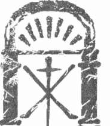
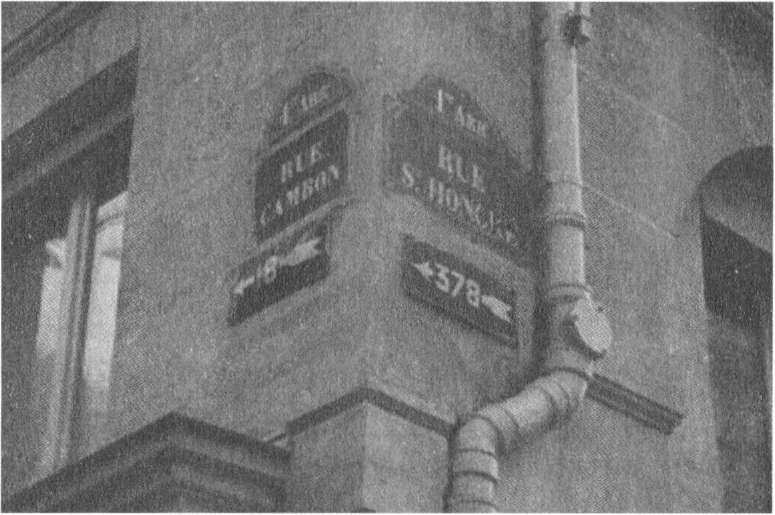

Sınırın öte yanında kendisine duyulan ilgi bitene kadar temkinli ve dikkatli yaşamak zorunda kalmıştı. Sonunda geçen kış Müfettiş Thouron terfi etmiş ve Paris emniyetini çok fa2la meşgul eden Dreyfus adlı subayın davranışlarını araştıran grubun başına getirilmişti. Constant'ın beynini kemiren Isolde'den intikam alma arzusu açısından daha geçerli olan nokta ise Carcassonne jandarmasından Müfettiş Bouchou'nun dört ay önce emekliye ayrıldığı haberinin gelmesiydi.
Artık Constant'ın sessizce Fransa'ya dönebilme yolu açılmıştı.
İlkbaharda adamını yollayıp bu zemini hazırlamaya başlamıştı. Belediye ve kilise yetkililerine gönderdiği imzasız mektuplarla Domaine de la Cade ve özellikle Jules Lascombe döneminde yaşanan olaylarla yakından bağlantısı olduğu bilinen Abbe Sauniere hakkında bir fısıltı kampanyası-
nın ateşini körüklemek zor olmamıştı. Geçmişte bir şeytanın, bir iblisin kırlarda terör estirdiği söylentilerini herkes gibi Constant da duymuştu.
Şimdi ise para verdiği işbirlikçileri bir canavarın vadilerde dolaştığı ve büyükbaş hayvanlara saldırdığı dedikodularını yaymaya başlamışlardı.
Uşağı köy köy dolaşıp kalabalıkları harekete geçirmiş, Domanie de la Cade topraklan içindeki tapınağın bir kez daha gizli güçlerle ilgili olayların merkezi olduğu söylentilerini yaymıştı. Uşak öncelikle gezgin mahkemeleri kasabadan kasabaya takip edenler, dağların ıssız yerlerinde koyun güden çobanlar, sokaklarda ya da yük arabalarının altında yatan çıplak ayaklı 569
Kate M o s s e
dilencileri etkilemişti. Constant'ın zehirlerini kumaşçıların, camcıların, büyük malikânelerde çalışan ayakkabı boyacılarının, temizlikçilerin ve orta hizmetçilerinin kulaklarına akıtmıştı.
Köylüler batıl inançlara sahip oldukları için kolayca kandırılıyorlardı.
Gelenekler, efsaneler ve tarih, adamın anlattığı uyduruk öyküleri doğruluyordu. Yaralıların üzerindeki izlerin herhangi bir hayvanın pençesine ait olmadığı fısıltıları oraya buraya aktarılıyordu. Geceleri garip uluma seslerinin duyulduğu, berbat bir kokunun yayıldığı söyleniyordu. Tüm kanıtlar Domaine de la Cade'daki bir kadının kocasının yeğeniyle evlenmesi gibi bir olayın şeytanın lanetini uyandırdığını gösteriyordu.
Şimdi ise dedikodusu yapılan üç kişi de ölmüştü.
Görülmeyen ipliklerle Constant, Domaine de la Cade çevresine ağım örüyordu.
Kendi adamının üstlenmediği saldırıları ise dağların yüksek ya-maçlarında dolaşan kurt ya da dağ kedilerinin olağan vahşetinin sonucu olduğunu varsayıyordu.
Artık Bouchou da emekliye ayrıldığına göre harekete geçme zamanı gelmişti. Zaten çok uzun süre beklemiş ve böylece Isolde'ü istediği gibi cezalandırma fırsatını kaçırmıştı. Ayrıca cıva tedavisi, şifalı sular, laudanum gibi bitmek bilmeyen tedavilere karşın Constant ölmek üzereydi.
Artık bilincinin de yavaşladığının farkındaydı. Bunu kendisi de kolayca anlayabiliyordu. Gölgeler sonsuza kadar çökmeden önceki zihin açıklığı-
nın kısa ve son alevinden korkuyordu.
Constant sınırı eylül başında geçip Rennes-les-Bains'e gitmeye karar verdi. Vernier ölmüştü. Isolde ölmüştü. Ama oğlan hâlâ yaşıyordu.
Yeleğinin cebinden altı yıl önce Vernier'ye Panorama Pasajında yapı-
lan saldırıda çalınan saati çıkardı. İspanya'nın gölgeleri uzarken, çürüyen frengili parmaklarıyla saati evirip çeviriyordu. Aklında sadece Isolde vardı.
570
93
O O
20 Eylül'de, Marguerite Vernier'nin öldürülmesinin yıldönümünde bir çocuk daha kayboldu. Bir aydan uzun bir süredir kaybolan ilk çocuktu ve Sougraigne'nin aşağısında nehrin kıyısından kaçırılmıştı. Kızın cesedi Fontaine des Amoureux yakınında bulunduğunda alnındaki pençe izleri ve yanaklarındaki kırmızı kesiklerle yüzü tanınmaz hale gelmişti. Sahip çıkılmayan sokak çocuklarından farklı olarak Aude ve Salz köylerinde akrabaları bulunan tanınmış bir ailenin çok sevilen en küçük kızıydı.
İki gün sonra şeytanın yaşadığına inanılan bir dağ gölü olan Lac de Barrenc yakınındaki ormanda iki erkek çocuk kayboldu. Bir hafta sonra bulunan cesetleri çürümüş haldeydi, bir hayvanın saldırısına uğramış oldukları ancak çok sonra anlaşılabildi.
Leonie tarihlerin çakışmasına aldırış etmemeye çalışıyordu. Çocukların zarar görmeden bulunmasını umut ederken araştırma ekiplerine evin içinde ve dışında çalışanların da yardımcı olmalarını teklif etti. Önerisi reddedildi. Louis-Anatole'ün iyiliği için sakin görünmeye gayret ederken bir yandan da fırtına geçinceye kadar Domaine de la Cade'dan ayrılmalarının daha iyi olacağını düşünmeye başlamıştı.
Mösyö Fromilhague ile Madam Bousquet dağlardan inen vahşi kö-
peklerin ya da kurtların saldırdığı konusunda ısrar ediyorlardı. Gündüzleri Leonie de bir iblis ya da doğaüstü bir yaratık söylentilerini duymazlıktan geliyordu. Ama karanlık çökünce tapınağın tarihi hakkında bildikleri ve tarot kartlarının hâlâ kendi topraklarında olduğu düşüncesi güvenini sarsıyordu.
571
Kate Mosse
Kasabanın havası gittikçe çirkinleşti ve sonunda halk onlara sırtını döndü. En önemsiz zarar verme girişimlerinde bile Domaine hedef alınmaya başlandı.
Bir öğleden sonra ormandaki yürüyüşünden eve dönerken ahırlardan birinin önünde birkaç uşağın durduğunu fark etti.
Merakla adımlarını sıklaştırdı.
"Ne oldu?" diye sordu.
Gözlerinde dehşet ifadesiyle ona dönen Pascal iri bedeniyle arkasındakini görmesini engellemeye çalıştı.
"Hiçbir şey yok madam."
Leonie önce ona ardından bahçıvana ve oğlu Emile'e baktı. Bir adım daha yaklaştı.
"Pascal?"
"Lütfen madam, sizin görmemeniz gereken bir manzara."
Leonie'nin bakışları sertleşti. "Hadi, hadi," dedi. "Ben çocuk değilim.
Benden gizlediğiniz şeyin o kadar da kötü olabileceğine inanmıyorum."
Pascal yine kıpırdamadı. Uşağın aşırı koruyucu davranışı ile kapıldığı merak arasında kalan Leonie uzanıp eldivenli eliyle koluna dokundu.
"İzin verirsen Pascal."
Tüm gözler şimdi Pascal'ın üzerindeydi. Adam bir süre kıpırdamadı ve sonra ağır ağır yana çekilip gizlemek için çabaladığı şeyi Leonie'nin görmesine izin verdi.
Birkaç gün önce derisi yüzülmüş bir tavşan kalın bir kürkçü çivisiyle kapıya çakılmıştı. Ahşap kapının üzerine kanla çizilmiş kaba saba bir ha-
çın çevresinde böcekler uçuşuyordu. Tam altına siyah ziftle PAR CE SIGNE
TU LE VAINCRAS'"' yazılmıştı.
Pis koku ve bu görüntü midesini bulandırınca Leonie eliyle ağzını kapattı. Ama kendine hâkim olmayı başardı. "Hemen ortadan kaldır Pascal," dedi. "Ve düşünceli davranışına memnun olurum." Çevresindekilerin gözlerine bakarken kendi korkusunun onların batıl inançlı gözlerinde yansıdığını fark etti. "Hepinizin."
(*) Bu işaretle yeneceksin.
572
Tapınak
Yine de Leonie'nin kararlılığı sarsılmadı. Hiç olmazsa Mösyö Baillard geri dönmeden Domaine de la Cade'dan ayrılmayacaktı. Yaşlı adam St. Martin Yortusu'nda geleceğini söylemişti. Son zamanlarda Hermite Sokağı'ndaki evi vasıtasıyla ona gönderdiği mektuplar seyrekleşmişti ve eline ulaşıp ulaşmadığını bilmiyordu.
Durum daha da kötüleşti. Bir çocuk daha kayboldu. 22 Ekim'de, Anatole ile Isolde'ün gizli nikâhının yıldönümünde, bir avukatla karısının beyaz kurdeleler ve dantelli eteklerle dolaşan minik kızı Perou Meydanı'ndan kaçırıldı. Fiyatlar daha da yükseldi.
Kötü bir rastlantı sonucu kızın parçalanmış bedeninin bulunduğu gün Leonie, Rennes-les-Bains'deydi. Ceset Domaine de la Cade'dan pek uzak olmayan Şeytanın Koltuğu adlı tepede bulunmuştu. Çocuğun kanlar içindeki parmakları arasına bir demet yabanıl ardıç tutuşturulmuştu.
Bunu duyan Leonie mesajın kendisi için bırakıldığını algılayıp buz kesti. Tahta araba Graıı'Rue Sokağı'ndan aşağıya inerken ardından köy-lülerin oluşturduğu düzensiz bir kortej geliyordu. Gündelik yaşamlarının zorluklarıyla sertleşmiş yetişkin erkekler açıkça ağlıyorlardı.
Hiç kimse konuşmadı. Sonra kırmızı suratlı, öfkeli ifadeli bir kadın Leonie'yi gördü ve işaret etti. Halkın suçlayıcı bakışları üstüne çevrilince Leonie korkuya kapıldı. Suçlayacak birini arıyorlardı.
"Hemen gitmeliyiz madam," diye fısıldadı Marieta aceleyle uzaklaş-
tırarak.
Arabanın beklediği yere doğru yürürken ne kadar korktuğunu belli etmek istemeyen Leonie başını dik tutmaya gayret etti. Mırıltılar şiddetlendi. Haykırışlar, hakaretler, taciz edici sözler tokat gibi benliğine indi.
"Uzak değil" dedi Marieta kolundan çekerek.
tki gün sonra kütüphanenin aralık penceresinden içeri gazyağına bulanmış alevli bir bez parçası atıldı. Ciddi bir hasar vermeden önce fark edildi ama ev halkı ürkek ve tetikte bekliyordu.
Pascal, Marieta ve Leonie'nin kasabadaki dostlarıyla tanıdıkları, arazide bir canavarın yaşamadığına halkı inandırmak için ellerinden geleni yaptılar ama batıl inançlı insanlar kararını vermişti. Tıpkı Jules Lascombe'un zamanında olduğu gibi dağın eski iblisinin geri döndüğüne kesinlikle inanıyorlardı.
573
Kate Mosse
Ateş olmayan yerden duman çıkmaz.
Leon ie lıer ne kadar Domaine'e çektirilen işkencede Victor Constant'ın parmağı olduğunu görmezlikten gelmeye çalışsa da bir yandan da adamın her an saldırmaya hazırlandığını düşünüyordu. Jandarma yetkililerini bu konuda uyarmaya çalıştı. Kendi adına girişimde bulunmaları için belediye başkanına, Mösyö Fromilhague'a yalvardı ama sonuç alamadı. Domaine tek başına kalmıştı.
Üç gün süren yağmurdan sonra işçiler, çeşitli yerlerde çıkan yangınları söndürdü. Kundaklama saldırıları... Gece karanlığında ön merdivene bırakılmış iç organları dışarı çıkarılmış bir köpek leşi genç hizmetçilerden birinin bayılmasına yol açtı. Anatole ile Isolde'ün yakın akraba oluşundan dolayı aralarındaki ilişkinin vadiye böyle bir terör getirdiğini anlatan açık saçık, ayrıntılı, imzasız mektuplar gelmeye başladı.
Korku ve şüphelerinde yalnız başına kalan Leonie kasaba halkını bir nefret dalgasına sürüklenmesinin arkasında Constant'ın olduğunu anladı.
Gerçi gece karanlığında bile kendi kendine yüksek sesle söylemiyordu, ama bu işkencenin asla sona ermeyeceğini biliyordu. Victor Constant'ın takıntıları hiç sona ermezdi. Eğer Rennes-les-Bains yakınındaysa, ki Leonie bundan korkuyordu, Isolde'ün ölmüş olduğunu çoktan öğrenmişti.
İşkencenin arazinin içlerine kadar girmesi Louis-Anatole'ün güvenli bir yere götürülmesini gerektiriyordu. Çok geçmeden Domaine de la Cade'a geri dönebileceklerini umarak yanına pek az eşya alacaktı. Burası Louis-Anatole'ün eviydi. Constant'ın oğlanın bu hakkını elinden almasına izin vermeyecekti.
Bu planı yapmak uygulamaktan daha kolaydı.
Ancak Leonie'nin gidebileceği bir yer yoktu. General Du Pont faturaları ödemeyi kesince Paris'teki ev çoktan boşaltılmıştı. Audric Baillard, Madam Bousquet ve Mösyö Fromilhague dışında pek fazla arkadaşı yoktu.
Achille çok uzaktaydı ve bütün zamanını konserler alıyordu. Victor Constant yüzünden Leonie'nin hiçbir akrabası kalmamıştı.
Ama başka seçeneği yoktu.
Pascal ile Marieta'dan başkasına sırrını açmadan yolculuk hazırlıklarına başladı. Constant'ın son saldırıyı Cadılar Bayramında yapacağından 574
Tapınak
emindi. Bu tarih yalnızca Anatole'ün ölüm yıldönümü değildi. Isolde aklının başında olduğu bir ara, 31 Ekim 1890 günü kısa ilişkilerinin sona ermesi gerektiğini Constant'a söylemiş olduğunu anlatmıştı. Bundan sonra olaylar başlamıştı.
Eğer Azizler Yortusu'nda saldırıya geçerse onların gitmiş olduğunu görmesinde kararlıydı.
31 Ekim günü soğuk ve ferah havada Leonie paltosunu ve şapkasını giyip yabanıl ardıçların yetiştiği açıklığa gitmeye niyetlendi. Tarot kartlarını bulması için Constant'a bırakmak istemiyordu, ama böylesine büyük bir ormanda tesadüf eseri bulabileceğine de pek inanmıyordu. Louis-Anatole ile birlikte geri dönünceye kadar, Mösyö Baillard da burada olmadığından, kartları saklaması için Madam Bousquet'ye vermeyi tasarlıyordu.
Terasa açılan kapıdan çıkmak üzereyken Marieta'nın seslendiğini duydu. Koridora doğru bakarak cevap verdi.
"Buradayım. Ne oldu?"
"Bir mektup var madam," diyerek Marieta elindeki zarfı uzattı.
Leonie kaşlarını çattı. Son aylardaki olaylardan sonra olağandışı her şeye dikkatli yaklaşması gerekiyordu. Zarfa bakınca elyazısını tanımadı.
"Kimden geliyor?"
"Çocuk, Coustaussa'dan geldiğini söyledi."
Çatık kaşlarıyla Leonie zarfı açtı. Bölgenin yaşlı rahibi Antoine Geliş
çok önemli bir konuyu görüşmek üzere öğleden sonra onu davet ediyordu.
Rahip münzevi olarak bilindiğinden ve burada geçirdiği altı yıl içinde Leonie, onu ancak iki kez Louis-Anatole'ün vaftiz ve Isolde'ün cenaze töreninde gördüğünden böyle bir davet alınca çok şaşırdı.
"Yanıt verecek misiniz madam?" diye sordu Marieta.
Leonie başını kaldırdı. "Çocuk hâlâ burada mı?"
"Burada."
"İçeri getir lütfen."
Ufak tefek, zayıf görünüşlü, fındık rengi pantolon, açık yakalı gömlek giymiş, boynuna kırmızı bir mendil bağlamış oğlan elinde kasketiyle hole girdi. Korkudan taş kesilmiş gibi görünüyordu.
575
Kate Mosse
"Korkacak bir şey yok," dedi Leonie, çocuğu rahatlatmak için. "Sen bir hata yapmadın. Yalnızca bu mektubu sana Cure Gelis'in kendisinin verip vermediğini sormak istedim."
Oğlan, hayır anlamında başını salladı.
Leonie gülümsedi. "Öyleyse kimin verdiğini söyleyebilir misin?"
Marieta, çocuğu öne doğru itekledi. "Hanımefendi sana bir soru sordu."
Yavaş yavaş, Marieta'nın sert davranışları karşısında Leonie, öğrenmek istediklerini en sonunda öğrendi. Alfred, büyükannesiyle birlikte Coustaussa köyünde yaşıyordu. Hisar yıkıntıları arasında oyun oynarken papaz evinin ön kapısından çıkan bir adam mektubu acele Domaine de la Cade'a götürmesi karşılığında bir sent vereceğini söylemişti.
"Cure Gelis'in yeğeni bir kadın var Madam Leonie," diye atıldı Marieta. "Onun yemeğini hazırlar, çamaşırlarını yıkar."
"Mektubu veren adam uşak mıydı?"
Alfred omzunu silkti.
Oğlandan daha fazla şey öğrenemeyeceğini anlayan Leonie gitmesine izin verdi.
"Oraya gidecek misiniz madam?" diye sordu Marieta.
Leonie düşündü. Yolculuğa çıkmadan önce tamamlaması gereken epey işi vardı. Buna karşılık Cure Gelis'in ciddi bir neden olmadıkça böyle bir mektup göndermeyeceğini de biliyordu. Alışılmamış bir durumdu.
"Gideceğim," dedi biraz durakladıktan sonra. "Pascal'a söyle hemen ön kapıda arabayla beni beklesin."
Saat tam üç buçukta Domaine de la Cade'dan ayrıldılar.
Sonbahar ateşlerinin kokusu havayı ağırlaştırmıştı. Yolda geçtikleri evlerin ve çiftliklerin kapılarına şimşir ve biberiye demetleri asılmıştı.
Kavşaklarda Cadılar Bayramı için geçici yol kenarı adak yerleri hazırlanmıştı. Kâğıt ve kumaş parçalarına yazılmış eskiden kalma dualar ve ricalar adak olarak sunulmuştu.
Rennes-les-Bains ve Rennes-le-Château mezarlıklarında olduğu gibi tüm dağ köylerinde de siyah giysili dul kadınların eski mezarların önünde 576
Tapınak
diz çöküp öbür dünyaya göçmüş sevdiklerinin kutsanması için dua ettiklerini biliyordu. Bölgeye çöken uğursuzluk nedeniyle bu yıl dua edenlerin sayısı artmıştı.
Sırtları terden ıslanıp burunlarından soğuk havada duman çıkana kadar atları zorladı Pascal. Yine de Coustaussa'ya ulaşıp anayoldan köye çı-
kan dik yokuşu tırmanmaya başladıklarında hava neredeyse kararıyordu.
Leonie vadideki kilise çanlarının saat dördü çaldığını duydu. Pascal'ı arabanın yanında bırakıp terk edilmiş köyde yürüdü. Coustaussa minicik bir köydü, bir avuç ev vardı. Ne ekmek fırını, ne de kafe göze çarpıyordu.
Kiliseye bitişik olan papaz evini kolayca buldu. İçeride yaşam belirtisi yok gibiydi. Görebildiği kadarıyla ışık yanmıyordu. Gitgide artan bir hu-zursuzlukla ağır kapıyı çaldı. Kimse gelmedi. Kimse yanıtlamadı. Bir kez daha sertçe vurdu.
"Cure Geliş?"
Birkaç dakika sonra kiliseyi denemeye karar verdi. Gittikçe kararan havada taş duvarı izleyip kiliseye ulaştı. Ön ve yan kapılar kilitliydi. Çar-pık bir çengele cızırdayan, loş bir yağ kandili asılmıştı.
Sabırsızlanarak sokağın karşısındaki evin kapısını çaldı. Ayaklarını sürüyerek gelen yaşlı bir kadın kapıdaki metal ızgarayı açıp baktı.
"Kim o?"
"İyi akşamlar," dedi Leonie. "Cure Geliş ile randevum vardı, ama kapıyı açan olmadı."
Yaşlı kadın somurtkan ve şüpheci gözlerle baktı, ama yanıtlamadı.
Leonie cebinden bir sent çıkarıp uzatınca açgözlülükle kaptı.
"Ritou burada değil," dedi sonunda.
"Ritou mu?"
"Rahip. Couiza'ya gitti."
Leonie bakakaldı. "Olamaz. Daha iki saat önce kendisinden bir mektup aldım. Beni evine davet ediyordu."
"Gittiğini gördüm," dedi kadın neşeli bir ses tonuyla. "Onu arayan ikinci kişisiniz."
Leonie elini uzatıp kadının metal ızgarayı kapatmasını önledi. Minicik bir ışık parçası sokağa salındı.
577
F: 37
Kate M o s s e
"İlk gelen kişi nasıl biriydi? Bir erkek mi?"
Sessizlik. Leonie bir sent daha çıkardı.
"Fransız," dedi kadın tükürürcesine. Aşağılamak istediği belliydi.
"Ne zaman geldi?"
"Güneş batmadan önce. Hâlâ aydınlıktı."
Şaşkınlıkla elini geri çekti Leonie. Izgara hemen kapandı.
Gecenin serinliğine karşı pelerinine sarındı. Oğlanın Coustaussa'dan Domaine de la Cade'a yürüdüğü süre içinde Cure Gelis'in beklemekten vazgeçip gittiğini varsaymaktan başka çaresi kalmamıştı. Acaba daha önemli bir işi mi vardı?
Boşa geçen yolculuktan sonra eve dönmek için acele ederek pelerinin cebinden çıkardığı kâğıt kalemle kendisiyle görüşemediği için ne kadar üzgün olduğunu belirten bir not yazdı ve papaz evinin duvarındaki mektup kutusuna attı. Doğruca Pascal'ın yanına döndü.
Dönüş yolunda Pascal atları daha da hızlandırdı, ama her dakika ol-duğundan uzun gibi geldiği için Domaine de la Cade ışıkları görününce, Leonie neredeyse mutluluktan ağlayacaktı. Buz tutmuş araba yolunda atlar yavaşlayınca Leonie yere atlayıp eve koşmayı bile düşündü.
Sonunda iki tekerlekli araba durdu ve koşarak merdiveni tırmanırken kendisi yokken adını koyamadığı kötü bir şeylerin olmuş olacağından korkuyordu.
Louis-Anatole koşarak geldi. "O geldi," diye bağırdı.
Leonie'nin kanı dondu.
Lütfen Tanrım hayır. Victor Constant olmasın.
Kapı ardından sertçe kapandı.
; • t—
578
93
O O
"Merhaba, matmazel," dedi bir ses gölgelerin arasından.
Leonie kulaklarına inanamadı.
Adam karanlıktan çıkıp onu selamladı. "Çok uzun zamandır yok-tum."
Leonie kollarını uzatarak öne doğru koştu. "Mösyö Baillard. Hoş
geldiniz, hoş geldiniz."
Yaşlı adam olduğu yerde zıplayan Louis-Anatole'e gülümsedi.
"Bu genç adam benimle yakından ilgilendi. Piyano çalarak beni eğ-
lendirdi."
Louis-Anatole daha fazla davet beklemeden siyah-kırmızı çini döşeli zeminde koşup piyano taburesine oturdu ve çalmaya başladı.
"Dinle beni Leonie hala," diye seslendi. "Bu notayı taburede buldum, kendi kendime öğreniyorum."
Büyük çaba göstererek la minör anahtarında sakin ve yumuşak melodiyi minik elleriyle akorları bölmeden çalmaya çalışıyordu. Melodi sonunda duyuluyordu. Anatole'ün oğlu tarafından böylesine güzel çalınabilirdi.
Tapınak 1891.
Leonie'nin gözleri yaşardı. Audric Baillard'ın kupkuru eliyle elini tuttuğunu hissetti. Son akort duyulmaz olana dek sessizce dinlediler.
Louis-Anatole ellerini kucağına indirdi, sessizlikte son yankıları din-ledikten sonra derin bir soluk aldı ve gururlu bir ifadeyle onlara baktı.
"İşte, kendim çalıştım. Senin için Leonie hala."
579
Kate Mosse
"Çok yeteneklisiniz efem," dedi Baillard alkışlayarak.
Louis-Anatole'ün yüzü keyifle ışıldadı. "Büyüdüğüm zaman eğer asker olamazsam, Amerika'ya gidip ünlü bir piyanist olacağım."
"Çok soylu meslekler," diye güldü Baillard. Yüzündeki gülümseme silindi. "Ama şimdi yetenekli genç dostum, halanla konuşmam gereken bazı konular var. Bize izin verir misin?"
"Ama ben."
"Çok uzun sürmez küçüğüm," dedi Leonie. "Konuşmamız bitince hemen seni çağıracağız."
Louis-Anatole içini çekti, omzunu silkti, sırıtarak mutfağa doğru ko-
şarken Marieta'ya seslendi.
Küçük oğlan gidince Mösyö Baillard ile Leonie salona geçti. Yaşlı adamın özenli ve dikkatli sorularına Leonie ocak ayında onun Rennes-Les-Bains'den ayrılışından bu yana yaşanan trajik, gerçeküstü, şaşırtıcı olayları anlattı ve Victor Constant'ın dönmüş olması konusundaki şüphelerini açıkladı.
"Yaşadığımız sıkıntıları size yazdım," derken sesindeki sitemi gizle-yemedi. "Ama mektuplarımı alıp almadığınızı bilmiyordum."
"Bazıları elime ulaştı ama sanırım bir kısmı kayboldu," dedi adam ciddi bir sesle. "Madam Isolde'ün trajik ölümünü ancak bugün dönünce öğrendim. Bunu duyduğuma çok üzüldüm."
Yaşlı adama bakan Leonie ne kadar kırılgan ve yorgun göründüğünü fark etti. "Bir bakıma kurtuldu. Uzun zamandır mutsuzdu," dedi alçak sesle. Ellerini kavuşturdu. "Anlatın bana, nerelerdeydiniz? Dostluğunuzu çok özledim."
Baillard dua edermiş gibi uzun, ince parmaklarını birleştirdi.
"Eğer benim için çok önemli bir konu olmasaydı, kesinlikle sizi yalnız bırakmazdım," dedi alçak sesle. "Yıllardır beklediğim birinin sonunda geri döndüğünü duydum, ama..." Adam duraklayınca Leonie sözcüklerin ardındaki çıplak acıyı algıladı. "Ama beklediğim kadın değildi."
Leonie'nin aklı bir an karıştı. Bir kez böylesine duygu yüklü konuş-
masına tanık olmuştu, ama sözünü ettiği kızın yıllar önce öldüğü izlenimine kapılmıştı.
580
Tapmak
"Ne dediğinizi anladığımdan emin değilim, Mösyö Baillard," dedi sözcüklerini özenle seçerek.
"Hayır," dedi adam usulca. Sonra yüzüne bir kararlılık ifadesi yerleş-
ti. "Eğer bilseydim, Rennes-les-Bains'den ayrılıp gitmezdim." İçini çekti.
"Ama bu yolculuktan yararlanıp, Louis-Anatole ve sizin için sığınacak bir yer hazırladım."
Leonie'nin yeşil gözleri şaşkınlıkla büyüdü.
"Ama kaçma kararını ben bir hafta önce verdim," diye itiraz etti. "Ya da daha kısa bir süre önce. Siz on aydır yoktunuz. Nereden..."
Ağır ağır gülümsedi Baillard. "Böyle bir yerin gerekli olacağını çok uzun zaman önce düşünmüştüm."
"Ama nasıl?"
Yaşlı adam elini kaldırdı. "Şüphelerinizde haklısınız Madam Leonie.
Victor Constant gerçekten de Domaine de la Cade yakınlarında."
Leonie kaskatı kesildi. "Eğer kanıtınız varsa, yetkilileri uyarmalıyız.
Şimdiye dek benim kaygılarımı ciddiye almadılar."
"Kanıtım yok, ama şüphelerim doğrulandı. Ama Constant'ın bir tek nedenle burada olduğuna eminim. Bu gece yola çıkmalısınız. Dağdaki evim sizi bekliyor. Yolu Pascal'a tarif ederim." Bir an durup devam etti.
"Pascal ve artık karısı olduğunu sandığım Marieta da sizinle birlikte gelecek değil mi?"
Leonie başıyla onayladı. "Niyetimi yalnız onlara açıkladım."
"Los Seres'te istediğiniz kadar kalabilirsiniz. Güven içinde dönünceye kadar."
"Teşekkür ederim, teşekkür ederim."
Leonie yaşlı gözlerle çevresine bakındı. "Bu evden ayrılacağım için üzülüyorum," dedi usulca. "Annem ve Isolde için mutsuz bir evdi. Oysa ben, yaşadığım tüm üzüntülere karşın, burasını bir yuva olarak gördüm."
Bir an durup tekrar konuştu. "Size itiraf etmem gereken bir şey var Mösyö Baillard."
Adamın bakışları keskinleşti.
"Altı yıl önce tapınağa tekrar gitmeyeceğime size söz vermiştim. Ve sözümü tuttum. Kartlara gelince, itiraf etmem gerekir ki, o gün Rennes-les-Bains'de sizden ayrıldıktan sonra... yani düellodan ve Anatole'ün..."
581
Kate Mosse
"Hatırlıyorum."
"Orman yoluyla eve dönüp gizlendiği yeri bulup bulamayacağıma bakmaya karar verdim. Yalnızca tarot kartlarını arıyordum."
Yüzünde hayal kırıklığı, hatta sitem ifadesi görmeyi bekleyerek adamın yüzüne baktı. Gülümsediğini fark edince şaşırdı.
"Ve kartların gizlendiği yeri buldunuz."
Soru değil tümceydi.
"Doğru. Ama inanın bana kartlara baktım ve tekrar aynı yere gizle-dim. Şimdi orada bırakmak istemiyorum. Constant onları bulabilir ve..."
Leonie konuşurken Audric Baillard ceketinin cebine elini soktu ve tanıdık siyah ipek kumaşa sarılı paketi çıkarıp açtı. En üstte Güç kartı duruyordu.
"Kartları almışsınız!" diye heyecanla bağırdı Leonie, ona doğru bir adım atarak. Sonra durdu. "Oraya gittiğimi biliyor muydunuz?"
"Büyük bir nezaketle eldivenlerinizi işaret olarak bırakmışsınız.
Unuttunuz mu?"
Leonie bakır saçlarının köklerine kadar kızardı.
Baillard siyah ipek kumaşı tekrar kapattı. "Tıpkı sizin gibi ben de kartların Victor Constant gibi bir adamın eline geçmesinin doğru olmayacağını düşündüm. Ve... belki de bizim için gerekli olurlar."
"Kartların gücünü kullanmamam konusunda beni uyarmıştınız," diye itiraf etti Leonie.
"Başka bir seçeneğiniz yoksa kullanmamalısınız," dedi sakin bir sesle. "Artık zamanın gelmiş olmasından korkuyorum."
Leonie kalbinin hızla atmaya başladığını hissetti. "Hemen gidelim buradan." Kalın kışlık jüponunun ve çoraplarının bacaklarını kaşındırdı-
ğını hissetti. Isolde'ün armağanı olan sedef saç tarakları keskin dişler gibi cildine saplanıyordu. "Gidelim. Hemen!"
Başlarına kötü olaylar gelmeden önce Domaine de la Cade'da Anatole ve Isolde ile yaşadığı mutlu günleri anımsadı birdenbire. 1891 yılının çok uzaklarda kalmış sonbaharında, Paris'in parlak ışıklarından sonra delinmez, mutlak karanlıktan ne kadar korkmuştu.
Bir varmış bir yokmuş.
582
Tapınak
O zamanlar başka bir kızdı. Masum, karanlığın ya da kederin dokunmadığı bir kız. Gözyaşları görüşünü bulanıklaştırınca, gözlerini yumdu.
Koridordaki koşan ayak sesleri anılarını silip götürdü. Yerinden fırlayıp gürültünün geldiği yöne döndüğü anda salon kapısı açıldı ve Pascal içeri daldı.
"Madam Leonie, Senyör Baillard," diye bağırdı. "Adamlar geldi...
Bahçe kapılarını zorlayıp içeri girmişler!"
Leonie pencereye koştu. Uzaklarda karanlık gökyüzünde altın ve ko-yu sarı parlayan meşalelerin ışığı seçilebiliyordu.
Daha yakından kırılan bir cam sesi geldi.
583
93
O O
Marieta'dan kendini kurtaran Louis-Anatole koşarak salona girdi ve kendini Leonie'nin kollarına attı. Yüzü solmuş, altdudağı titriyordu, ama bir yandan da gülümsemeye çalışıyordu.
"Kim onlar?" diye sordu alçak sesle.
Leonie, ona sımsıkı sarıldı. "Onlar kötü adamlar küçüğüm."
Tekrar pencereye dönüp elini gözlerine siper etti. Henüz uzaktaydılar ama yaklaşıyorlardı. Her saldırganın elinde bir meşale diğerinde ise bir silah vardı. Savaşa giden bir orduya benziyordu. Leonie, adamların Constant'ın saldırı işaretini vermesini beklediklerini varsaydı.
"Ne kadar kalabalıklar," diye mırıldandı. "Tüm kasabayı bizim aley-himize nasıl çevirdi?"
"Var olan batıl inançları su yüzüne çıkardı," diye yanıtladı Baillard.
"İster cumhuriyetçi ister kralcı olsun hepsi bu topraklarda dolaşan iblis öykülerini dinleyerek büyümüştür."
"Asmodeus."
"Farklı zamanlarda farklı isimler alır, ama her zaman yüzü aynıdır.
Kentin iyi insanları gündüzleri böyle öykülere inanmadıklarını söyleseler bile, gece olunca daha derindeki ruhlar, onlara fısıldamaya başlar. Koparan, parçalayan ve öldürülemeyen doğaüstü yaratıklardan, örümceklerin ağlarını ördüğü loş ve yasak yerlerden söz eder."
Haklı olduğunu biliyordu Leonie. Paris'te Garnier Sarayı'ndaki isyanın yaşandığı gecenin anıları gözünün önüne geldi. Daha geçen hafta 584
Tapınak
Rennes-les-Bains'de tanıdığı kişilerin yüzünde gördüğü nefret ifadesini anımsadı. Kan dökme arzusunun bir kalabalığı ne kadar çabuk ve kolay saracağını biliyordu.
"Madam?" dedi Pascal ısrarla.
Leonie meşale alevlerinin siyah göğü aydınlattığını, araba yolunu çevreleyen yüksek kestane ağaçlarının ıslak yapraklarında yansıdığını görüyordu. Perdeleri çekip pencereden uzaklaştı.
"Isolde ile ağabeyimi mezarlarında taciz ettikleri yetmiyormiş gibi,"
diye mırıldandı. Louis-Anatole'ün siyah kıvırcık saçlarına bakarken, duymadığını umuyordu.
"Onlarla konuşamaz mıyız?" diye sordu küçük oğlan. "Bizi rahat bı-
rakmalarını söyleyemez miyiz?"
"Konuşma zamanı artık geçti küçük dostum," diye yanıtladı Baillard.
"Bazen nedeni ne kadar kötü olursa olsun, harekete geçme dürtüsü dinleme arzusundan daha güçlü olur."
"Onlarla savaşacak mıyız?"
Baillard gülümsedi. "İyi bir asker ne zaman durup düşmanıyla çatışa-cağını ve ne zaman geri çekileceğini bilir. Bu gece savaşmayacağız."
Louis-Anatole başını salladı.
"Umut var mı?" diye fısıldadı Leonie.
"Umut her zaman vardır," dedi adam alçak sesle. Ardından yüz ifadesi sertleşti. Pascal'a döndü. "Araba hazır mı?"
Pascal başını sallayarak onayladı. "Tapınağın yakınındaki açıklıkta hazır bekliyor. Kalabalığın dikkatini çekmeyecek kadar uzakta. Kimseye görünmeden oradan çıkıp gidebileceğimizi umut ediyorum."
"İyi, iyi. Arka taraftan gidip, patikayı geçeceğiz, ormana gireceğiz ve ilk hedeflerinin ev olması için dua edeceğiz."
"Ya uşaklar?" diye sordu Leonie. "Onlar burada kalmamalı."
Pascal'ın dürüst bakışlı ablak yüzüne derin bir kızarıklık yerleşti.
"Gitmeyecekler. Evi savunmak istiyorlar."
"Bizim yüzümüzden kimsenin zarar görmesini istemem Pascal," dedi Leonie.
"Onlara söylerim madam ama kararlarını değiştireceklerini sanmı-
yorum."
585
Kate Mosse
Leonie, adamın gözlerinin yaşardığını fark etti.
"Teşekkür ederim," dedi alçak sesle.
"Seninle buluşuncaya kadar Marieta'nla biz ilgileniriz."
"Tamam, Senyör Baillard."
Bir an durup karısını öptü ve salondan çıktı.
Bir süre kimse konuşmadı. Durumun umarsızlığı tekrar akıllarına gelince herkes hareketlendi.
"Leonie yalnızca en gerekli eşyalarını almalısın. Marieta hemen Madam Leonie'nin bavulunu ve kürklerini al. Uzun ve soğuk bir yolculuk yapacağız."
Marieta yutkundu.
"Marieta, bavulumda dikiş kutusunun içinde küçük bir dosya var.
Şu büyüklükte resimler." Elleriyle bir dua kitabı ölçüsü gösterdi. "Dikiş
kutusunu yanına al. Güvende olsun. Ama dosyayı bana getir, olur mu?"
Marieta başını sallayarak dışarı çıktı.
Leonie, kızın gitmesini bekleyip Mösyö Baillard'a döndü.
"Bu savaş sizin savaşınız değil Audric."
"Sajhe," dedi adam usulca. "Dostlarım bana Sajhe der."
Hiç beklenmedik açıklamasından onur duyup gülümsedi Leonie.
"Pekâlâ Sajhe. Yıllar önce bana ölülerin değil canlıların benim hizmetleri-me gereksinim duyacaklarını söylemiştiniz. Hatırlıyor musunuz?" Başını eğip yeğenine baktı. "Şu anda yalnızca o önemli. Eğer onu götürürseniz, en azından görevimi başardığıma inanacağım."
Yaşlı adam gülümsedi. "Aşk... gerçek aşk sabırlıdır Leonie. Ağabeyin, Isolde, annen, bunu biliyordu. Sen onları yitirmedin."
Domaine de la Cade'daki ilk davetten sonra göle bakan burundaki taş
bankta otururken Isolde'ün söylediklerini anımsadı Leonie. Gerçi henüz o zaman kim olduğunu bilmiyordu, ama Isolde, Anatole'e duyduğu aşktan söz ediyordu. Öylesine güçlü bir aşktı ki, onsuz Isolde'ün yaşamı dayanılmaz olmuştu. Leonie de böyle bir aşk yaşamak isterdi.
"Louis-Anatole'ü Los Seres'e götüreceğinize söz vermenizi istiyorum," dedi Leonie ve duraksadı. "Ayrıca size bir zarar gelirse, asla kendimi affetmem."
586
Tapınak
Baillard başını salladı. "Henüz benim zamanım gelmedi Leonie. O
yolculuğa çıkmadan önce yapmam gereken daha pek çok işim var."
Ceket cebinden ucu görünen tanıdık sarı ipek mendile kaçamak bir bakış attı Leonie.
Marieta elinde Louis-Anatole'ün sokak giysileriyle kapıda göründü.
"Hadi, çabuk olalım."
Küçük oğlan, uysal bir tavırla ona yaklaşıp giydirmesine izin verdi.
Sonra aniden hole koştu.
"Louis-Anatole!" diye seslendi Leonie.
"Almam gereken bir şey var," dedi oğlan birkaç dakika sonra elinde nota kâğıdıyla kapıda görünüp. "Gittiğimiz yerde müziksiz kalmak istemeyiz," dedi yetişkinlerin üzgün yüzlerine bakarak. "Neyse, artık kalmayacağız!"
Leonie çömeldi. "Çok haklısın küçüğüm."
"Ama nereye gittiğimizi bile bilmiyorum," diye kekeledi oğlan.
Evin dışında bir haykırış yükseldi. Bir savaş narası.
Leonie ayağa kalkarken yeğeninin minik elinin avucuna sarıldığını hissetti.
Azizler Yortusu'nda yaşanan olayların körüklediği korkularıyla, karanlığın içinde meşaleler, sopalar ve av tüfekleriyle silahlanmış adamlar eve doğru ilerlemeyi sürdürdüler.
"Yani başlıyor," dedi Baillard. "Cesaret, Leonie."
Bakışları kenetlendi. Ağır ağır, istemeyerek tarot destesini genç kıza uzattı.
"Amcanın yazdıklarını hatırlıyor musun?"
"Elbette."
Hafifçe gülümsedi. "Kitabı kütüphaneye geri götürdüğün ve bir daha ellemediğini bana söylediğin halde hatırlıyor musun?" diye usulca azarladı.
Leonie kızardı. "Belki bir iki kere içindekileri okumuş olabilirim."
"Belki de şanslısın. Yaşlılar her zaman bilge değildir. Kaderinin buna bağlı olduğunu biliyorsun değil mi? Eğer yaptığın resimlere can verirsen, iblisi çağırırsan, seni de götüreceğini biliyorsun, değil mi?"
Yeşil gözlerinde korku dolaştı. "Biliyorum."
"Pekâlâ."
587
Kate Mosse
"Yine de iblisin, yani Asmodeus'un amcamı niçin götürmediğini anlamıyorum."
Baillard omzunu silkti. "Kötülük kötülüğü çeker. Amcan yaşamından vazgeçmek istemediğinden iblisle mücadele etti, ama bundan sonra sonsuza dek damgalandı."
"Ya eğer ben..."
"Bu kadar yeter," dedi Baillard sertçe. "Zamanı gelince her şey açık-lığa kavuşur."
Leonie siyah ipek kumaşa sarılı paketi alıp pelerininin büyük cebine yerleştirdi, şömine rafına koşup köşesinde duran kibrit kutusunu aldı.
Parmak uçlarında yükselip yaşlı adamın alnına bir öpücük kondurdu.
"Teşekkürler Sajhe," diye fısıldadı. "Kartlar için. Her şey için."
Leonie, Audric Baillard, Louis-Anatole ve Marieta salondan çıktığın-da hol karanlıktı.
Her köşede, her girintide Leonie bir haraketlilik seziyordu. Artık uzun boylu güçlü bir erkek olan bahçıvanın oğlu Emile eline geçen tüm silahlarla evin içinde çalışanları organize ediyordu. Eski bir misket tüfeği, vitrinden aldığı bir kılıç, sopalar... Bahçede çalışanlar, av tüfekleri, kürekler, tırmıklar ve kazmalarla silahlanmışlardı.
Her gün birlikte olduğu insanların yüzlerindeki bu korkuyu görünce Louis-Anatole'ün şok geçirdiğini fark etti Leonie. Çocuk halasının elini daha sıkı tuttu.
Leonie, adamlara yaklaşıp sesini yükseltti.
"Yaşamınızı tehlikeye atmanızı istemiyorum. Sadık ve cesur insanlarsınız. Eğer buna tanık olsalardı ağabeyim ile Madam Isolde de tıpkı benim gibi düşünürdü, ama bizim kazanabileceğimiz bir savaş değil bu."
Tanıdık yüzlere dikkatle baktı. "Lütfen size yalvarıyorum, zamanınız varken, buradan gidin. Ailelerinize, çocuklarınıza dönün."
Kimse kıpırdamadı. Piyanonun üzerindeki siyah-beyaz fotoğrafın camı parlayınca dikkatini çekti. Leonie kararsız kaldı. Çok uzun zaman önce Perou Meydam'nda geçirdikleri güneşli öğleden sonranın hatırası.
Anatole oturuyor, Isolde ve kendisi arkasında duruyordu. Bir an fotoğrafı 588
Tapınak
yanına almayı düşündü, ama yalnızca en gerekli eşyalarını almak konusundaki talimatı anımsayıp vazgeçti. Portre, evi ve içindekileri korur gibi her zamanki yerinde asılı kaldı.
Yapacak başka bir şey kalmadığını gören Leonie ile Louis-Anatole camlı metal kapıdan terasa çıktılar. Baillard ile Marieta onları izledi. Arkalarından bir ses yükseldi.
"İyi şanslar Madam Leonie. Sana da ufaklık. Döndüğünüz zaman biz burda olacağız."
"Size de iyi şanslar," diye yanıtladı oğlan tatlı sesiyle.
Dışarısı soğuktu. Kırağı yanaklarını ve kulaklarını acıttı. Leonie pelerinin kapüşonunu örttü. Evin arka tarafından kalabalığın gürültüsü geliyordu. Gerçi epey uzaktaydılar, ama yine de korku yaratıyorlardı.
"Nereye gidiyoruz Leonie hala?" diye fısıldadı Louis-Anatole.
Leonie, çocuğun sesindeki korkuyu fark etti. "Pascal'ın arabayla beklediği ormana doğru gidiyoruz."
"Niçin bizi orada bekliyor?"
"Çünkü kimsenin bizi duymasını ya da görmesini istemiyoruz," dedi Leonie aceleyle. "Sonra sessizce Mösyö Baillard'ın dağdaki evine gideceğiz."
"Yol uzun mu?"
"Uzun."
Oğlan bir süre sustu ve sonra sordu. "Ne zaman geri döneceğiz?"
Leonie dudağını ısırdı. "Bunu bir saklambaç oyunu olarak düşün. Yalnızca bir oyun." Parmağını dudaklarına götürdü. "Şimdi acele etmeliyiz Louis-Anatole. Ve son derece sessiz olmak zorundayız."
"Ve cesur..."
Leonie'nin parmaklan cebindeki kart destesine dokundu. "Ah evet,"
diye mırıldandı. "Ve cesur olmak zorundayız."
TV"
589
93
O O
"Yangını başlatın!"
Gölün yakınında Constant'ın emriyle adamlar meşalelerini şimşir çitin tahtamsı gövdesine dokundurdu. Birkaç dakika içinde çitin önce dalları, ardından gövdeleri yanmaya, La Cite'nin duvarlarındaki havai fişekler gibi patlamaya başladı. Alevler yükseldi, sallandı ve çevreyi sardı.
Soğuk ses bir kez duyuldu. "Hücum!"
Adamlar bahçelere daldılar, suyun kenarından dolaştılar, çiçek tarhlarını çiğnediler. Süs ağaçlarını devirerek terasa çıkan basamakları tırmandılar.
Constant, sanki Champs-Elysees Bulvarı'nda bir geçit törenini izliyor-muş gibi bir elinde sigarası, diğer eliyle bastonuna dayanmış topallayarak arkalarından geliyordu.
Aynı gün saat dörtte Leonie Vernier, Coustaussa yolundayken, Constant ailesini perişan etmek için yine bir çocuğu öldürüp evine bıraktırmıştı.
Adamın parçalanmış cesedi bir kağnıyla Perou Meydanı'na getirilirken Constant orada bekliyordu. Tükenmiş enerjisine karşın halkın ilgisini çekmek kolay olmuştu. Böylesine korkunç yaraları herhangi bir hayvan değil ancak doğaüstü bir yaratık açabilirdi. Domaine de la Cade'da saklanan bir yaratık. Bir şeytan, bir iblis.
O sırada Domaine de la Cade'da çalışan bir seyis de Rennes-les-Bains'deydi. İnsanlar üzerine yürüyüp bu yaratığın nerede saklandığını, kimin denetlediğini öğrenmek istediler. Hiçbir şey saçma sapan büyücü-
590
Tapınak
lük öykülerini itiraf etmesini sağlayamadı ve böylece kalabalık daha da öfkelendi.
Kendi gözleriyle görmek için eve baskın yapma önerisi Constant'tan geldi. Birkaç dakika içinde herkes bu fikre ısındı. Domaine de la Cade'a yapılacak baskını yönetmesini halkın kendisinden istemesini sağladı.
Yürümekten bitkin düşen Constant terasın altında durakladı. Kalabalığın ikiye ayrılıp evin ön ve yan tarafını sarmasını, arkadaki terasın taş
merdivenini tırmanmasını izledi.
Sarmaşıklara tırmanan küçük bir oğlan elindeki meşaleyi kumaşın kenarına sokuşturunca, terası örten çizgili tente alev aldı. Gerçi ekim ayının havasından dolayı nemliydi, ama birkaç saniye içinde meşale yere düştü. Yağ, kumaş ve ateş kokusu havayı doldurup boğucu bir siyah duman çıktı ortaya.
Kargaşanın arasında bir ses duyuldu. "İblisler!"
Alevler köylülerin duygularını körüklemiş gibiydi. Çelik burunlu bir çizmenin tekmesiyle ilk pencere kırıldı. Bir cam parçası adamlardan birinin kalın kışlık pantolonuna batınca, bir tekmeyle uzağa fırlattı. Başka pencereler de kırıldı. Şık, zarif odalar, perdeleri tutuşturmak için meşalelerini içeri sokan kalabalığın şiddetine teker teker teslim oldu.
Uç adam bir taş saksı alıp bir koçbaşı gibi kullanarak kapıyı zorladı.
Cam ve metal kıvrıldı, çerçeve bükülünce paramparça oldu. Üçlü elindeki saksıyı bıraktı. Kalabalık hole ve kütüphaneye daldı. Yağ ve zifte bulanmış paçavralarla maun rafları tutuşturdular. Kuru sayfalar ve antika deri ciltler saman kadar çabuk alev alınca kitaplar yanmaya başladı. Çatırdayan ve saçılan alevler raflardan raflara sıçradı.
Saldırganlar perdeleri yere indirdi. Isının artmasıyla, çerçevelerin bükülmesinden ve iskemle ayaklarıyla aldığı darbelerden öteki pencereler de kırıldı. Leonie'nin ilk kez oturup Les Tarots adlı kitabı okuduğu masayı devirdiler, pirinç bağlantılarıyla biraz uğraşıp merdiveni yerinden söktüler. Alevler halıların kenarlarını yalamaya başladı ve büyük çaplı bir yangın oluştu.
Saldırganlar kırmızı-siyah taş döşeli hole çıktılar. Bacaklarını beceriksiz hareketlerle öne atan Constant ağır ağır onları izledi.
591
Kate Mosse
İşgalcilerle evi savunanlar ana merdivenin altında karşı karşıya geldiler.
Uşakların sayısı çok azdı, ama cesurca çarpıştılar. Onlar da iftiralar-dan, dedikodulardan, söylentilerden çok etkilenmişlerdi ve Domaine de la Cade'ın şöhreti kadar kendi onurlarını da korumaya çalışıyorlardı.
Genç bir uşak kendisine yaklaşan adama sersemletici bir yumruk indirdi. Hiç beklemediği darbeyi alan köylü, kafasından kanlar fışkırırken arkaya doğru sendeledi.
Hepsi birbirini tanıyordu. Birlikte büyümüşlerdi, bir kısmı akraba, arkadaş ve komşuydu ama düşman gibi savaşıyorlardı. Emile bir zamanlar kendisini omzunda okula götüren adamın çelik burunlu acımasız tekmesiyle yere yuvarlandı.
Haykırışlar şiddetlendi.
Av tüfekleriyle silahlanmış bahçıvanlar ve arazide çalışanlar kalabalığa doğru ateş edince bir saldırgan kolundan, bir başkası bacağından yaralandı. Yaralardan kan sızmaya başladı, darbelerden korunmak için kollar havaya kalktı. Ama sayıca fazla olan saldırganlar ev halkını sindirdi. Önce yaşlı bahçıvan yere düştü ve biri ayağıyla bastırınca kırılan kemiğinin sesi kulağına geldi. Emile daha uzun süre dayandı, sonunda iki adam onu yakaladı ve üçüncüsü yere yıkılıncaya kadar yumruğunu yüzüne indirdi. Emile bu adamların oğullarıyla bir zamanlar oyun oynamıştı. Onu kucaklayıp korkuluğun üzerinden aşağıya attılar. Bir saniye kadar adeta havada asılı kaldı ve baş aşağı merdivenin altına düştü. Kolları, bacakları garip bir açıyla yayılmıştı. Ağzının kenarından ince bir kan sızıyordu ama gözlerinde hiç hareket yoktu. Ölmüştü.
Marieta'nın kuzeni, kıt akıllı ama doğruyla yanlışı ayırt edebilen Antoine, tanıdığı bir adamın elinde kemerle yaklaştığını fark etti. Kaçırılıp öldürülen çocuklardan birinin babasıydı. Acı ve keder yüzüne yansımıştı.
Bir saniye durup düşünmeden Antoine, adamın boynuna atıldı ve güreşerek yere indirmeye çalıştı. Gerçi iri yapılı ve güçlü bir gençti ama kavga etmesini bilmiyordu. Birkaç saniye içinde kendini yerde buldu. Ellerini kaldırdı ama çok geç kalmıştı.
Kemer yüzünde patladı, metal toka açık gözüne girdi. Antoine'ın dünyası kızıla boyandı.
592
Tapınak
Constant, ısı ve ise karşı eliyle yüzünü korumaya çalışarak merdivenin altında durmuş, uşağının gelip rapor vermesini bekliyordu.
"Kaçmışlar," dedi soluk soluğa. "Her tarafı aradım. Yaşlı adam ve kâhyayla birlikte on beş dakika önce buradan gitmişler."
"Yaya olarak mı?"
Uşak başını salladı. "Bunu salonda buldum mösyö."
Victor Constant titreyen elini uzattı. Ayaklarına iki sevgilinin bağlandığı tuhaf bir iblis imgesi olan bir tarot kartı. Duman görüşünü engeller-ken bakışlarını odaklamaya çalıştı. Sanki iblis hareket ediyor, bir yükün altındaymış gibi kıvranıyordu. Âşıklar Isolde ile Vernier'ye benzemeye başlamıştı.
Dumandan yanan gözlerini eldivenli eliyle ovuştururken aklına bir fikir geldi.
"Gelis'in işini bitirince, bu tarot kartını cesedinin yanına bırak. Hiçbir şey olmasa bile akıl karıştırır. Coustaussa halkı kızın onun evine gittiğini biliyor."
Uşak başını salladı. "Ya siz ne yapacaksınız mösyö?"
"Arabaya gitmeme yardım et. Bir çocuk, bir kadın ve ihtiyar bir adamın çok uzağa gittiklerini sanmıyorum. Bence arazinin içinde bir yerde saklanıyorlardır. Dik yamaçlar ağaçlarla kaplı. Gidebilecekleri bir tek yer var."
"Ya şunlar?" dedi uşak başıyla kalabalığı işaret ederek.
Çatışma alevlenirken çığlıklar şiddetlenmişti. Birazdan talan etmeye başlayacaklardı. Küçük oğlan bu gece kaçmayı başarsa bile, geri dönmesi için hiçbir nedeni olmayacaktı. Beş parasız kalacaktı.
"Bırak istediklerini yapsınlar," dedi Constant.
593
F: 38
93
O O
Ormana girince karanlıkta ilerlemek çok zor oldu. Louis-Anatole güçlü bir çocuktu, Mösyö Baillard yaşma karşın oldukça hızlı yürüyordu ama yine de hızlı gidemiyorlardı. Yanlarında bir lamba getirmişler ama saldırganların dikkatini çekmesinden çekindikleri için yakmamışlardı.
Leonie bunca zamandır gitmediği tapınağın yolunu ayaklarının kolayca bulduğunu fark etti. Yokuş yukarı tırmanırken, uzun siyah pelerininin eteği düşen sonbahar yapraklarını hışırdatıyordu. Yabanıl ardıç çalıların yetiştiği ormanı, Anatole'ün öldüğü açıklığı, gölün kıyısındaki burnun üzerindeki ağabeyi ile Isolde'ün mezarlarını defalarca dolaşmıştı ve belki bir daha bunları göremeyeceğini düşününce yüreği burkuluyordu. Kayalar, tepeler, korular, ağaçlıklı patikalar sanki hayatından, karakterinden birer parçalardı.
"Geldik mi Leonie hala?" diye sordu Louis-Anatole, on beş dakika kadar yürüdükten sonra. "Çizmelerim ayağımı sıkıyor."
"Neredeyse geldik," diyerek oğlanın elini sıktı. "Dikkat et ayağın kaymasın."
"Biliyor musun ben örümceklerden hiç korkmuyorum," derken sesi söylediklerini yalanlıyordu.
Açıklığa ulaşınca adımlarını yavaşlattılar. Leonie'nin ilk gelişinden anımsadığı porsuk ağaçlarının sınırladığı yol artık iyice kapanmış, yaprakların örtüsü geçilmez olmuştu.
594
Tapmak
Pascal bekliyordu. Arabanın iki yanındaki soluk ışıklı iki lamba so-
ğuk havada cızırdıyor, atlar sert toprağa ayaklarını vuruyordu.
"Burası neresi Leonie hala?" dedi Louis-Anatole. Bir an için merakı korkusunu yenmişti. "Hâlâ bizim bahçede miyiz?"
"Evet. Burası eski mozole."
"Hani insanları gömdükleri yer mi?"
"Bazen."
"Niçin annemle babam buraya gömülmedi?"
Leonie duraksadı. "Çünkü onlar ağaçların, çiçeklerin arasında olmak isterlerdi. Gölün yakınında yan yana yatıyorlar. Hatırladın mı?"
Louis-Anatole kaşlarını çattı. "Yani kuşları duymak için mi?"
Leonie gülümsedi. "İyi bildin."
"Bu nedenle mi beni buraya hiç getirmedin?" diyerek kapıya yaklaştı.
"Burada hayalet yok diye mi getirmedin?"
Leonie elini uzatıp oğlanı tuttu. "Şimdi zamanımız yok Louis-Anatole."
Oğlanın suratı asıldı. "İçeri giremez miyim?"
"Şimdi olmaz."
"İçeride örümcek var mı?"
"Belki vardır, ama sen örümceklerden korkmadığına göre sorun olmaz."
Başını salladı, ama yüzü solmuştu. "Başka bir gün yine geliriz. Hava aydınlıkken."
"Güzel bir fikir."
Mösyö Baillard'ın koluna dokunduğunu hissetti Leonie.
"Daha fazla gecikmeyelim," dedi Pascal. "Constant, bizim evde olmadığımızı fark etmeden önce aramıza olabildiğince fazla mesafe koyalım."
Eğilip Louis-Anatole'ü arabaya bindirdi. "Bakalım ufaklık bir gece yarısı macerasına hazır mısın?"
Louis-Anatole başını salladı.
"Yol uzun sürecek."
"Barrenc Gölünden uzak mı?"
"Gölden de uzak," dedi Pascal.
595
Kate Mosse
"Bence önemli değil," dedi Louis-Anatole. "Marieta, benimle oyun oynayacak mı?"
"Oynayacak."
"Leonie hala da masal anlatacak."
Yetişkinler hüzünlü gözlerle birbirine baktılar. Mösyö Baillard ile Marieta sessizce arabaya binince Pascal sürücü koltuğuna oturdu.
"Hadi gel Leonie hala," dedi Louis-Anatole.
Leonie sert bir hareketle arabanın kapısını kapattı. "Ona iyi bakın."
"Bunu yapmak zorunda değilsin," dedi Baillard aceleyle. "Constant hasta. Geçen zaman ve hastalığın doğal ilerleyişi bu intikam çabasını kısa zamanda sona ulaştırabilir. Eğer beklersen, her şey kendiliğinden geçebilir."
"Belki olabilir," diye yanıtladı Leonie sertçe. "Ama bu tehlikeyi göze alamam. Belki üç yıl, belki beş hatta on yıl bile sürebilir. Louis-Anatole'ün böyle bir gölge altında büyümesine, sürekli merak etmesine, gözlerini karanlığa dikmesine izin veremem. Bir köşede onu bekleyen, ona zarar vermek isteyen birinin tehdidi altında yaşamamalı."
Berlin Sokağı'ndaki evin penceresinden aşağıya bakan Anatole. En küçük şeyde bir tehlike gören, bakışlarını ufuk çizgisinden ayırmayan Isolde'ün solgun yüzü.
"Hayır," dedi kesin bir sesle. "Louis-Anatole'ün böyle bir yaşam sürmesini istemiyorum." Gülümsedi. "Bitmek zorunda. Şimdi, bu gece, burada." Derin bir soluk aldı. "Siz de buna inanıyorsunuz, Sajhe."
Lambanın titrek ışığında bir an göz göze geldiler. Yaşlı adam başını salladı.
"İlk fırsatta kartları eski yerine geri götürürüm. İnan bana."
"Leonie hala," dedi Louis-Anatole kaygılı bir sesle.
"Küçüğüm, benim yapmam gereken bir şey var," diye yanıtladı Leonie sesini düzgün tutmaya çalışarak. "Yani şu anda senin yanında olamayaca-
ğım. Pascal, Marieta ve Mösyö Baillard ile güvende olacaksın."
Bu ayrılığın geçici olmadığını içgüdüleriyle algılayıp kollarını ona uzatırken yüzü buruşmuştu.
596
Tapınak
"Hayır!" diye bağırdı. "Seni bırakmak istemiydiııın lı.ıl.ı Nmı hıı.ık mayacağım."
Koltuğun kenarına doğru atılıp kollarını halasının b o y n u n a doladı Leonie, onu öptü, saçlarını okşadı ve kollarından sıyrıldı
"Hayır!" diye haykırdı oğlan çırpınarak.
"Marieta'ya iyi davran," derken sözcükler boğazına takıldı. "Mösyö Baillard ile Pascal'a da göz kulak ol."
Geri çekilip elini arabanın kenarına vurdu. "Gidin," diye bağırdı.
"Gidin."
Pascal kamçıyı şaklattı ve araba öne doğru hareketlendi. Louis-Anatole'ün gitgide duyulmaz olan sesini işitmemek için Leonie kendini zorladı.
Kırağı kaplı, sert toprağın üzerindeki tekerlek sesleri sona erince, dönüp eski taş tapınağın kapısına doğru yürüdü. Gözlerinde yaşlarla metal tokmağı tuttu. Bir an durup omzunun üstünden arkaya baktı. Uzaktaki kıvılcımlar, turuncu parlaklık siyah gökyüzüne doğru uzanan gri bulutu fark etti. Ev yanıyordu.
Kararlıydı. Tokmağı çevirdi, kapıyı itti ve eşikten geçip tapınağa girdi.
597
93
O O
Onu, serin ve ağır bir hava karşıladı.
Leonie'nin gözleri yavaş yavaş karanlığa alıştı. Cebinden kibrit kutusunu çıkardı, bir lambanın cam kapağını açıp fitilini yaktı.
Asmodeus'un mavi gözleri üzerine dikildi. Leonie orta bölüme doğ-
ru ilerledi. Sunağa doğru yürürken duvardaki resimler titredi, sallandı ve sanki üzerine doğru gelmeye başladı. Döşeme taşlarını kaplayan toz tanecikleri tapınağın sessizliğinde çizmelerinin altında çıtırdıyordu.
Önce ne yapması gerektiğinden emin değildi. Eli, cebindeki kartlara gitti. Öteki eliyle ayrılmaya kıyamadığı kendisinin, Anatole'ün ve Isolde'ün fotoğraflarını deri dosyanın içinde katlı olarak tutuyordu.
En sonunda Mösyö Baillard'a, kartları kendi gözüyle gördükten sonra amcasının yazdığı kitabı defalarca okuyup kelimesi kelimesine ezberledi-
ğini itiraz etmişti. Mösyö Baillard'ın kartların içerdiği yaşam ile rüzgârın taşıdığı müziğin birlikte hayaletleri nasıl çağırdığı konusunda anlattıkları yine de aklında bir şüphe kırıntısı bırakmıştı.
Böyle olabilir mi?
Leonie kartların, mekânın ya da müziğin bir araya gelmesinin bu etkiyi yarattığını düşünüyordu.
Eğer efsaneler gerçekse, tüm şüphelerine karşın, kendisi için geri dö-
nüşün olmayacağını da biliyordu. Ruhlar ona sahip çıkacaktı. Geçmişte bir kez denemiş, ama başarılı olamamışlardı. Bu gece eğer Constant'ı alacak-larsa kendisini götürmelerine de karşı koymayacaktı.
Ve Louis-Anatole güvende olacaktı.
598
Tapınak
Ani bir sürtünme, vurma sesiyle sıçradı. Gürültünün kaynağını araş-
tırınca, dışarıdaki bir ağacın çıplak dallarının cama çarptığını fark edip rahatlayarak içini çekti.
Lambayı yere bırakıp bir kibrit çaktı ve duvardaki metal apliklerin içindeki içyağı mumları yaktı. Eski fitillerin üzerinden yağ damlacıkları akıp soğuk metala çarpınca katılaşmaya başladı, ama sonunda tapınağın içi titrek sarı bir ışıkla doldu.
Mihrabın içindeki sekiz tablonun her hareketini izlediğini hissederek öne ilerlerdi. Sunağın önünde yıllar önce Jules Lascombe'un taş zemine Domaine'in adını yazdığı yeri buldu. C-A-D-E.
Doğru mu, yanlış mı yaptığını bilmeden cebinden tarot kartlarını çıkardı, örtüyü açtı ve amcasının sözcükleri beyninde yankılanırken tüm desteyi kare taşın tam ortasına bıraktı. Deri dosyanın bağlarını çözdü ama fotoğrafları içinden çıkarmadan destenin yanına yerleştirdi.
Kartların gücünü kullanarak başka bir boyuta yürüyeceğim.
Leonie başını kaldırdı. Bir anlık bir durgunluk oldu. Dışarıda ağaçla-rın arasında dolaşan rüzgârın sesini duydu. Dikkatlice dinledi. Mumların dumanı titremeden yükseliyordu ama kayın ağaçlarının, sırayla uzanan porsuk ağaçlarının dalları arasından tiz bir ıslık gibi incecik bir müzik sanki kulağına geliyordu. Sonra kapının altından, renkli camlı pencereler-le metal çerçevelerin aralığından müzik içeri girdi.
Tapınağın içinde aniden serin bir hava hissetti ve yalnız olmadığımı fark ediyorum.
Kitaptaki sözcükleri anımsayarak gülümsedi. Artık korkmuyor, yalnızca meraklanıyordu. Kısacık bir an sekizgen mihraba bakınca sanki Güç imgesinin yüzü hareket etti. Boyanmış suratta uçuk bir gülümseme belirdi.
Kızın yüzü bir an için kendi çizdiği tarot resimlerindeki kendi yüzüne benzedi. Aynı bakır rengi saçlar, aynı yeşil gözler, aynı sert bakışlar.
Benliğim ve hem geçmiş, hem gelecek benliklerim aynı anda var oldular.
Çevresinde bir hareketlilik hissetti. Kartlar mı, yoksa ruhlar mı canlanmıştı, bunu bilemiyordu. Umutlu ve istekli bakışlarında Aşıklar kartı, Anatole ile Isolde'ün sevgili yüz hatlarına büründü. Leonie elinde terazisi, uzun eteğinde notalarla Adalet imgesinin ardında Louis-Anatole'ün yüz 599
Kate Mosse
hatlarını scçebildiğini düşündü. Tanıdığı küçük çocuk, kartın üzerindeki kadının hatlarında belirdi. Gözünün ucuyla bakınca Audric Baillard'ın yani Sajhe'nin yüz hatlarını Büyücü' nün genç yüzünde gördü.
Müziğin benliğini sarmasını beklerken kıpırdamadan duruyordu.
Yüzler, giysiler, manzaralar hareket ediyor, değişiyor, yıldızlar gibi parlı-
yor, adeta müziğin görünmeyen akımıyla pırıltılı havada asılı duruyordu.
Benlik duygusunu yitirdi. Boyut, mekân, zaman, kütle... hepsi önemsizdi artık.
Titreşimler ve havanın hışırtısıyla hayaletlerin hiç dokunmadan, nazik, yumuşak bir biçimde omuzlarına, ensesine sürtündüğünü, alnında do-laştığını, kendisini sarmaladığını varsaydı. Sessiz bir kaos oluşuyor, sessiz fısıltılar ve iç çekişlerin ahenksiz gürültüsü büyüyordu.
Leonie kollarını öne doğru uzattı. Kırmızı giysisi ve siyah pelerini hâlâ üzerinde olmasına karşın kendini hafif, şeffaf, suyun üzerinde yüzer gibi hissediyordu. Onlara katılması için bekliyorlardı. Uzattığı ellerini yukarı çevirince avuçlarında sonsuzluğun simgesinin belirdiğini açıkça gördü. Sekiz rakamına benzeyen bir simge.
"A'ı'ci lo tems s'en va res l'eternitat."
Sözcükler tertemiz dudaklarından döküldü. Bunca zaman bekledikten sonra artık ne anlama geldiğini biliyordu.
Burada, bu mekânda zaman sonsuzluğa doğru yöneliyor.
Leonie gülümsedi, Louis-Anatole'ü ardında, annesi, ağabeyi ve yengesini önünde düşünerek ışığa doğru adım attı.
Engebeli arazide arabanın sarsıntısı onu çok rahatsız etmiş, ellerinde ve sırtında yaralar açmıştı. Bandajların arasından cerahat aktığını hissediyordu.
Constant arabadan indi.
Bastonuyla toprağı yokladı. Biraz önce burada iki at durmuştu. Tekerlek izleri tek bir arabanın tapınaktan uzağa doğru gittiğini gösteriyordu.
"Burada bekle," diye emretti.
Tapınağa giden yolu çevreleyen sık porsuk ağaçlarının arasında dola-
şan rüzgârın gücünü hissediyordu. Rüzgârdan korunmak için redingotunun 600
Tapınak
yakasını yukarı doğru kaldırdı. Kokladı. Koku alma duyusunu neredeyse yitirmişti ama sevimsiz bir koku, tütsü ve sahilde çürüyen yosunların kötü kokusu burnuna geldi.
Gözleri soğuktan yaşarıyordu ama içerideki ışıkları fark etti. Oğlanın orada saklanmış olması düşüncesi gücünü tekrar kazanmasını sağladı. Yü-
rürken suyu andıran hışırtıya, telgraf tellerinin arasında esen rüzgârı ya da tren gelirken metal rayların titreşimini andıran ıslık sesine aldırış etmedi.
Adeta müzik gibiydi.
Leonie Vernier'nin ışık, duman ve ses kullanarak kalkıştığı ya da kalkışmadığı hilelerle dikkatini dağıtmamaya kararlıydı.
Constant ağır kapıya yaklaşıp tokmağı çevirdi. Tokmak önce hareket etmedi. Kilitlendiğini ya da önüne açılmasın diye bir şeyler yığıldığını var-sayarak bir kez daha denedi. Birdenbire açılıverdi. Dengesini yitirip yarı tökezleyerek tapınağa girdi.
Genç kız tam karşısında sırtı ona dönük, sekiz kenarlı mihrabın ortasına yerleştirilmiş sunağın önünde duruyordu. Kendini gizlemek için çaba göstermiyordu. Oğlandan ise hiçbir iz yoktu.
Çenesini ileri uzatıp gözleriyle etrafı taradı, bastonuyla döşeme taş-
larına vurarak beceriksiz adımlarla orta bölüme doğru ilerledi. Kapının yanında sanki üzerindeki heykel sökülüp alınmış gibi üstü çentikli boş bir sütun vardı. Birkaç boş sıranın etrafındaki duvarlara yerleştirilmiş tanıdık aziz heykelleri sunağa yaklaşan adamı izliyordu.
"Matmazel Vernier," diye seslendi onu fark etmemesine sinirlenerek.
Genç kız, yine kıpırdamadı. Sanki adamın varlığından habersizdi.
Constant durup sunağın önündeki taşa yayılmış kartlara baktı. "Nedir bu saçmalık?" diyerek kare taşa bastı.
Birden, Leonie, ona döndü. Kapüşonu arkaya düştü. Constant gözlerini ışıktan korumak için hastalıklı ellerini siper etti. Dudaklarındaki gü-
lümseme yok oldu. Anlamıyordu. Kızın yüz hatlarını, Berlin Sokağı'ndaki evden çaldığı resmi çağrıştıran buklelerini, sert bakışlarını görüyordu, ama sanki başka bir biçime bürünmüştü.
Constant, kızın karşısına geçtiğinde, onun büyülenmiş ve körleşmiş
gibi olduğu yerde dikildiğini, sonra da yavaş yavaş değişmeye başladığını gördü. Derisinin altından kemikleri, sinirleri ve kafatası görünüyordu.
601
Kate Mosse
Constant haykırdı.
Bir şeyler üzerine çullandı ve daha önce fark etmediği sessizlik çığlık ve uluma halini aldı. Yaratıkların kafasına girmesini önlemek için ellerini kulaklarına bastırdı ama tırnaklar ve pençeler bedeninde hiçbir iz bırak-madan parmaklarını geri çekti.
Duvardaki imgeler şimdi kendi varlıklarının karanlık biçimlerine dönüp yere inmişlerdi. Tırnaklar, parmaklar pençelere; gözler ateş ve buza dönüştü. Constant korunmak için başını göğsüne indirip kollarını kaldırırken bastonu yere düştü. Dizüstü yere yuvarlandı ve kalbi ritmini yitirirken soluk almak için çabaladı. Yerdeki kare taştan uzaklaşmak için ileriye doğru hareket etmek istedi ama ezici bir rüzgâr gibi görünmeyen bir güç sürekli olarak geriye gitti. Ulumalar, müziğin titreşimi gitgide yükseliyordu. Kafasının içinde yankılanan ses hem içeriden, hem dışarıdan gelir gibiydi. Aklını kaçırıyordu.
"Hayır!" diye haykırdı.
Ama seslerin gücü ve şiddeti yükseldi. Ne olduğunu anlayamadan Leonie'yi aradı. Artık onu göremiyordu. Işık fazla parlaktı. Çevresindeki hava akkor haline gelmiş dumanla parlıyordu.
Arkasından ya da cildinin yüzeyinden farklı bir ses geldi. Yabanıl bir hayvanın pençeleri kemiklerini tırmıklar gibiydi. İrkildi, sarsıldı, acıyla bağırdı ve bir hava esintisi onu yere yığdı.
Birdenbire göğsünün üzerine çömelen balık ve katran kokan, sert kır-mızı derili, alnında boynuzlara, garip delici bakışlara sahip mavi gözlü, korkunç, çarpık bir iblis göründü. İblisin var olmadığını biliyordu. Ama işte vardı. Asmodeus'un yüzü ona bakıyordu.
"Hayır!" İblis, onu almadan önce son bir haykırış için ağzı açıldı.
Aniden tapınağın içindeki hava duruldu. Ruhların fısıltıları, iç çekiş-
leri gitgide hafifledi ve sonunda sessizlik çöktü. Kartlar yere yayılmıştı.
Duvardaki imgeler yine ikiboyutlu biçimlerine geri döndü, ama ifadeleri ve tavırları belli belirsiz değişmiş gibiydi. Her biri Domaine de la Cade'da yaşamış ve ölmüş kişilerle benzerlik taşıyordu. Tıpkı Leonie'nin tabloları gibi...
602
Tapınak
Dışarıdaki açıklıkta Constant'ın uşağı rüzgâr, duman ve ışıktan korkarak büzüldü. Efendisinin bir kez, ardından bir kez daha haykırdığını duydu. İnsana benzemeyen sesin verdiği korkuyla donup kaldı.
Ancak sessizlik çöküp, tapınağın içindeki ışıklar yok olunca saklandığı yerden çıkacak cesareti buldu. Yavaş yavaş ağır kapıya yaklaştı ve aralık olduğunu fark etti. Hafifçe itince kapı açıldı.
"Beyefendi?"
İçeri girdi, bir daha, "Beyefendi?" diye seslendi. Soluğu andıran bir esinti tapınağın içindeki dumanı silip süpürdü ve duvardaki lambanın ışığı etrafı aydınlattı.
Efendisinin bedenini gördü. Sunağın önünde, çevresine yayılmış oyun kâğıtlarının arasında yüzükoyun yatıyordu. Uşak hızla koştu ve efendisinin bir deri bir kemik kalmış bedenini sırtüstü çevirdi ve geriledi. Constant'ın yüzünde yabanıl bir hayvanın vahşi izleri gibi üç derin kırmızı yarık vardı.
Pençe izi gibi... Öldürdüğü çocukların yüzlerine kendi eliyle bıraktığı izler gibi...
Adam hiç düşünmeden haç çıkardı ve öne eğilip efendisinin korkuyla büyümüş gözlerini kapattı. Constant'ın kalbinin üzerinde duran dikdört-gen kartı fark edince eli havada kaldı. Şeytan.
Bu kart hep burada mıydı?
Ne olduğunu çözemeden elini cebine sokup efendisinin Coustaussa'daki Cure Gelis'in cesedinin yanına bırakmasını emrettiği kartı aradı.
Cebine koyduğuna yemin edebilirdi ama şimdi cebi boştu.
Düşürmüş müydü? Başka bir açıklaması olabilir mi?
Bir aydınlanma anından sonra uşak efendisinin cesedinin yanından ayrılıp, heykellerin görmeyen bakışları arasından orta bölümden geriye, tapınaktan dışarıya, kartın üstündeki buruşmuş, asık surattan uzağa doğru koşmaya başladı.
Aşağdaki vadide gece yarısı çanları çalmaya başladı.
İÜ
603

ON İKİNCİ BÖLÜM
Yıkıntılar
Ekim 2007
93
O O
D O M A I N E DE LA CADE
31 EKİM 2007 ÇARŞAMBA
"Doktor O'Donnell," diye seslendi Hal tekrar.
Saat on ikiyi on geçiyordu. On beş dakikadır Shelagh O'Donnell'ın evinin önünde bekliyordu. Kapıyı tekrar çalmayı denedi. Komşuları da evde olmadığından, biraz dolaşmaya çıkmış ve tekrar geri dönüp kapıyı çalmıştı. Hâlâ yanıt yoktu.
Doğru yerde olduğundan emindi. Adresi defalarca kontrol etmişti ve kadının randevuyu unutacağını sanmıyordu. Olumlu düşünmeye çabalı-
yordu, ama her geçen saniye sinirleri biraz daha geriliyordu. Neredeydi acaba? Bu sabah trafik yoğundu, acaba bir yerlerde takılıp kaldı mı? Yoksa duş yaptığı için mi duymamıştı?
En mantıklısı olduğunu itiraf ettiği en kötü senaryo ise Shelagh'nın birlikte karakola gitmekten vazgeçmesiydi. Polislerden hoşlanmadığı ortadaydı ve yanında Hal ya da Meredith olmayınca belki cesaretini yitirmişti.
Parmaklarını saçlarının arasında dolaştırdı, bir adım geriledi ve panjurları kapalı pencerelere baktı. Aude Nehri yanındaki sevimli evlerden biriydi. Evin bir tarafı nehre bakıyor, diğer tarafı ise yeşile boyalı demir ve bambu çitle yoldan gizleniyordu. Evin arkasına geçtiği takdirde bahçeyi daha rahat görebileceği aklına geldi. Evleri izledi ve tekrar geri döndü.
607
Kate M o s s e
Hangi ev olduğunu tahmin etmek zordu ama duvar renklerini tanıyordu.
Biri mavi diğeri açık sarıya boyanmıştı. Sonunda hangisinin Shelagh O'Donnell'ın evi olduğuna karar verdi.
Çite dik açı yapan alçak bir duvar vardı. Terası görmek için biraz yaklaşırken umuda kapıldı. Sanki orada biri var gibiydi.
"Doktor O'Donnell? Benim, Hal Lawrence."
Yanıt yok.
"Doktor O'Donnell? Saat yarım."
Eve bitişik küçük terasta yüzüstü yatıyordu. Rüzgâra karşı korunaklı bir yerdi, güneş ekim sonu için oldukça sıcaktı, ama yine de güneşlenmek için uygun bir hava değildi. Belki de kitap okuyordu. Ama her ne yapıyorsa Hal'i görmezlikten gelmeye, sanki orada yokmuş gibi davranmaya çalıştığı belliydi. Bakımsız iki büyük saksı Hal'in görüşünü engelliyordu.
"Doktor O'Donnell?"
Cebindeki telefonun titreşimini hissetti. Pek dikkat etmeden çıkarıp mesajı okudu.
"Onları buldum. Şimdi tapınaktayım."
Önce görmeyen gözlerle mesaja baktı, ardından beyni çalışmaya baş-
ladı ve Meredith'in ne demek istediğini anlayınca gülümsedi.
"En azından birimiz verimli bir sabah geçiriyoruz," diye mırıldandı ve tekrar kendi işine döndü. Vazgeçmeye niyetli değildi. Bu sabah kendileriyle görüşmesi için komiseri ikna etmek için bu kadar uğraştıktan sonra Shelagh'nın ortadan kaybolmasına izin veremezdi.
"Doktor O'Donnell!" diye seslendi tekrar. "Orada olduğunuzu biliyorum."
Merak etmeye başladı. Fikrini değiştirmiş bile olsa, Hal'in varlığına hiç aldırış etmemesi garipti doğrusu. Bu gürültüleri duymazlıktan gele-mezdi. Bir an durakladı ve duvarın üstüne tırmandı. Terasta, çitin altına doğru itilmiş kalın bir sopa duruyordu. Sopayı eline alınca bir ucunda bazı lekeler olduğunu fark etti.
Kan lekesi.
Shelagh O'Donnell'ın hareketsiz bedenin olduğu yere doğru koştu.
Birkaç kez darbe aldığını görmek için bir tek bakış yeterliydi. Nabzını yokladı. Hâlâ soluk alıyor ama pek de iyi görünmüyordu.
608
Tapınak
Telefonunu çıkarıp titreyen parmaklarla ambulans çağırdı.
"Şimdi," diye bağırdı adresi üç kez tekrarladıktan sonra. "Evet, soluk alıyor! Ama çabuk, haydi!"
Hal telefonu kapattı. Hızla eve girip kanepenin arkalığına örtülmüş
battaniyeyi kapıp dışarı koştu. Sıcak tutmak için dikkatle kadının üzerine örterken yerinden kıpırdatmaması gerektiğini biliyordu. Tekrar eve girdi ve ön kapıdan sokağa çıktı. Atacağı adım için suçluluk duyuyordu ama cankurtaranın gelmesini Rennes-les-Bains'de bekleyecek zamanı yoktıı.
Geri dönmek zorundaydı.
Komşu evin kapısını yumrukladı. Bir kadın kapıyı açınca neler oldu-
ğunu anlattı ve ambulans gelene dek O'Donnell'ın yanında kalmasını rica etti. Kadına itiraz edecek fırsat vermeden arabasına koştu.
Motoru çalıştırıp gaz pedalına yüklendi. Bu olayın sorumlusu bir tek kişi olabilirdi. Hemen Domaine de la Cade'a dönmeli ve Meredith'i bulmalıydı.
Julian Lawrence arabanın kapısını çarparak kapattı ve otelin merdi-venlerini tırmandı.
Paniğe kapılmış olmamalıydı.
Yüzünden aşağıya akan ter damlacıkları gömleğinin yakasını ıslatmıştı.
Tökezleyerek resepsiyona girdi. Çalışma odasına gidip sakinleşmek zorundaydı. Sonra ne yapacağına karar verebilirdi.
"Mösyö? Mösyö Lawrence?"
Görüşü biraz bulanıklaşmıştı, arkasını dönünce resepsiyon görevlisi-nin kendisine el salladığını fark etti.
"Mösyö Lawrence," diye söze başladı Eloise ve cümlesini değiştirdi.
"İyi misiniz?"
"Ben iyiyim," diye tersledi Julian. "Ne var?"
Eloise irkildi. "Yeğeniniz bunu size vermemi istedi."
Julian aralarındaki mesafeyi üç adımda aldı ve kızın elindeki kâğıdı kaptı. Kısa notta Hal, kendisiyle saat ikide görüşmek istediğini yazmıştı.
Juilan kâğıdı avucunda buruşturdu. "Ne zaman verdi bunu?"
"Saat on buçuk sularında mösyö, siz çıktıktan biraz sonra."
609
F: 39
Kate Mosse
"Yeğenim otelde mi?"
"Sanırım saat on ikiden biraz önce sabah gelen konuğuyla buluşmak üzere Rennes-les-Bains'e gitti. Bildiğim kadarıyla da geri dönmedi."
"Amerikalı kız da yanında mıydı?"
"Hayır, o, bahçeye çıktı," diye yanıtladı teras kapısına bakarak.
"Ne zaman?"
"En azından bir saat önce beyefendi."
"Ne yapacağını söyledi mi? Ya da nereye gideceğini? Yeğenimle ne konuştuğunu duydun mu Eloise? Herhangi bir şey işittin mi?"
Davranışlarının genç kadını ürkütmeye başladığı belliydi, ama yine de sakin bir tavırla yanıtladı.
"Hayır beyefendi ama..."
"Ne?'
"Dışarı çıkmadan önce bir şey... İngilizcesini hatırlamıyorum... bir kürek... ödünç alıp alamayacağını sordu."
Julian irkildi. "Bir kürek mi?"
Julian ellerini tezgâha vurup iki ıslak iz bırakırken Eloise ürkerek geri çekildi. Eğer toprağı kazmayacaksa, Bayan Martin kürek istemezdi, değil mi? Üstelik Julian'ın otelden ayrılmasını da beklemişti.
"Kartlar," diye mırıldandı. "Nerede olduklarını biliyor."
"Bir şey mi oldu beyefendi? Kötü görünüyorsunuz," dedi Elosie kaygılı bir şekilde.
Julian yanıt vermeden arkasını döndü, sert adımlarla holü geçip teras kapısını açtı ve duvara çarpmasına aldırış etmedi.
"Yeğeniniz dönünce kendisine ne diyeyim?" diye seslendi Eloise.
Resepsiyonun arkasındaki küçük pencereden Julian'ın gidişini izledi.
Madam Martin'den farklı olarak göle değil, ormana doğru gidiyordu.
610
93
O O
İleride bir porsuk ağacı sırası ve eski bir patikanın izleri vardı. Patika hiçbir yere gitmiyormuş gibi görünüyordu, ama Meredith yakından bakın-ca bir binanın temellerini ve birkaç kırık taşı fark etti. Bir zamanlar burada bir bina varmış.
işte burası.
İçinde kartların bulunduğu kutuyu sımsıkı tutarak bir zamanlar tapı-
nağın bulunduğu yere doğru yürüdü. Sanki kısa bir süre önce yağmur yağ-
mış gibi ayaklarının altında otlar ıslaktı. Çamurlu çizmelerinin tabanında terk edilmişliğin ve ıssızlığın duygusunu alıyordu.
Hayal kırıklığını umursamadı. Birkaç büyük taş, dış duvar kalıntıları dışında başka bir şey yoktu. Göz alabildiğine otlar uzanıyordu.
Dikkatli bak.
Meredith boşluğa bakınca yüzeyin tümüyle düz olmadığını fark etti.
Hayal gücünü biraz zorlayınca, bir tapınağın kalıntılarını görebileceğini fark etti. Yaklaşık yedi metreye üç metre büyüklüğünde alçaltılmış bah-
çeyi andıran bir yer vardı. Kutuyu biraz daha sıkı tutarak ilerledi ve bunu yaparken ayağını kaldırıp adım attı.
Sanki bir eşikten geçer gibi.
Bir anda ışık değişti. Biraz daha yoğunlaştı, donuklaştı. Kulaklarında rüzgârın sesi şiddetlendi, tıpkı sürekli yinelenen bir nota ya da telefon kab-lolarının arasında dolaşan bir esinti gibi... Hafif bir tütsü, ıslak taş ve eski ibadetlerin kokusunu alıyordu.
611
Kate Mosse
Kutuyu yere bırakıp çevresine bakındı. Havanın bir oyunuyla ıslak topraktan hafif bir sis yükselir gibiydi. Ardından görünmez bir el sırayla mumları yakıyormuş gibi, yıkıntıların etrafında teker teker ışık noktacıkları belirmeye başladı. Noktacıklar birleşince tapınağın yıkılmış duvarları şekillendi. İncecik bir bulutun ardından Meredith yerdeki harfleri gördü.
C-A-D-E. Yaklaşırken çizmelerinin altındaki yüzey de değişti. Toprak ve otların yerini sert döşeme taşları aldı.
Kot pantolonunun ıslanmasına aldırış etmeden yere diz çöktü. Kart destesini çıkarıp kutunun kapağını kapattı. Kartları kirletmemek için ceketini tersinden dikiş kutusunun üzerine serdi. Paris'te Laura'nın öğrettiği gibi kartları karıştırdı, sol eliyle üçe ayırdı. Orta, üst ve alt bölümleri tekrar üst üste getirdi ve iğreti masanın üzerine kapalı olarak yerleştirdi.
Uyuyamıyorum.
Meredith kendi falını okumaya kalkışamazdı. Aldığı notları her gözden geçirişte, anlamları biraz daha aklını karıştırmıştı. Mekân ile müziğin bağlantısına saygı göstererek belirli bir düzen ortaya çıkana dek yalnızca sekiz kartı açacaktı.
Laura'nın vaat ettiği gibi kartların öyküyü anlatmasını bekleyecekti.
İlk kartı çekti ve Adalet' in tanıdık yüzünü görünce gülümsedi. Kartları karıştırmasına ve kesmesine karşın kuru dere yatağında bulduğu zaman en üstte olan kart yine karşısına çıkmıştı.
İkinci kart olan Kule çatışma ve tehdidi simgeliyordu. Birincinin yanına bırakıp bir daha çekti. Bir eli cenneti, diğeri dünyayı işaret eden, başının üzerinde sonsuzluk simgesi bulunan mavi gözlü Büyücü. Biraz ürkütücü bir imgeydi; ne tamamen iyi, ne de tamamen kötüydü. Dikkatle bakarken kim olduğunu çıkaramadığı halde bu yüzü tanıdığını düşündü.
Dördüncü kartı görünce tekrar gülümsedi. Kız kardeşinin resimlediği haliyle, beyaz takım elbisesi, hasır şapkası ve elinde bastonuyla Anatole Vernier karşısındaydı. Ardından gelen Rahibe kartının imgesi olan Isolde Vernier güzel, zarif ve bilge idi. Sonra Isolde ile Anatole'ü birlikte gösteren Âşıklar kartı açıldı.
612
Tapınak
Yedinci kart Şeytan' di. Asmodeus'un ürkütücü yüz hatlarının canlanmasını izlerken eli bir an kartın üzerinde durakladı. Audric S. Baillard'ın kitabında anlattığı dağlardaki saldırıların sembolü iblis... Geçmişin ve bugünün kötülük öyküleri...
Çektiği kartların sırasına göre sonuncunun hangisi olacağını biliyordu. Tüm kahramanlar, Leonie'nin resimlediği biçimde buradaydı, ama sanki farklı bir öykü anlatırcasına biraz değişmişti.
Burnunda tütsü kokusu, hayalinde geçmişin renkleriyle zamanın geçip gittiğini fark etti. Daha önce yaşananların ve daha sonra yaşanacakların kartların açılmasıyla bir araya geldiği sürekli bir şimdiki zaman...
Her şey geçmişle bıtgün arasında oynuyor.
Parmaklarının ucuyla dokunduğu son kartı açmadan önce Leonie'nin gölgelerin arasından sıyrıldığını hissetti.
VIII. kart: Güç.
Son kartı açmadan, soğuğa ve ıslaklığa aldırmayarak yere oturdu ve kutunun üzerine yaydığı kart oktavına baktı. Birden imgelerin değişmeye başladığını fark etti. Bakışları Joker kartına gitti. Daha önce görmediği minik bir renk damlacığı belirdi. Neredeyse görünmeyecek kadar küçük bir kan damlası gitgide büyüdü ve Anatole'ün beyaz giysisini kırmızıya boyadı. Kalbini örttü. Bir an için imgenin gözleri bakışlarıyla Meredith'i tuttu.
Gözlerini karttan ayıramayan Meredith, Anatole Vernier'nin ölümünü izlemekte olduğunu fark ederek soluğunu tuttu. İmge ağır ağır resimdeki toprağa doğru kayınca arkadaki Soularac ve Bezu dağları ortaya çıktı.
Daha fazlasını görmek istemiyordu, ama aynı zamanda başka bir se-
çeneğinin olmadığını da biliyordu. Yanındaki kartın üzerindeki harekete gözleri kaydı. Başlangıçta ince kollarını, uzun zarif parmaklarını saran beyaz eldivenleri ve uzun mavi elbisesiyle Isolde Vernier'nin güzel yüzü Rahibe kartından ona bakıyordu. Derken yüz hatları değişmeye başladı.
Rengi pembeden maviye döndü. Gözleri büyüdü, adeta yüzüyormuş gibi kolları başının üstüne yükseldi.
613
Kate M o s s e
Boğuluyor.
Meredith'in öz annesinin ölümünün bir benzeri...
Etekleri donuk yeşil derin suyun içinde bacaklarının etrafında kabarırken, çamurlu parmaklar fildişi ayakkabıları ayaklarından çıkarttı ve kartın rengi koyulaştı.
Isolde'ün gözleri kapandı. Son bakışının korku ya da boğulmanın dehşeti yerine rahatlama yansıttığını gördü Meredith. Nasıl olabilir? Yaşamak ağır geldiği için ölmek mi istemişti?
Sıranın sonundaki Şeytan kartına bakıp gülümsedi. Şeytanın ayaklarına zincirlenmiş iki figür artık orada değildi. Sütunun altındaki zincirler boş duruyordu. Asmodeus yalnız kalmıştı.
Meredith derin bir soluk aldı. Eğer kartlar bir zamanlar olanları anlatıyorsa, Leonie'ye acaba ne olmuştu? Elini uzattı, ama kartı çeviremedi.
Gerçeği öğrenmek istiyordu, ama aynı zamanda değişen imgelerde okuya-cağı öyküden korkuyordu.
Tırnağını kartın köşesine taktı, gözlerini yumdu, üçe kadar saydı ve baktı.
Kart boştu.
Gördüklerine inanamayarak dizlerinin üzerinde doğruldu. Kartı alıp tersine çevirdi, tekrar yüzüne çevirdi.
Kart tümüyle boştu. Bembeyazdı; Midi manzarasının yeşil ve maviliği bile yoktu.
Tam o anda bir ses daldığı düşünceden onu ayırdı. Kırılan bir dal, patikada yerinden oynayan bir taş, ağaçtan havalanan bir kuşun kanat sesi...
Meredith ayağa kalkıp arkaya doğru baktı ama hiçbir şey göremedi.
"Hal?"
O an hızla yüzlerce şey düşündü. Hepsini öteledi. Hal olması gerekirdi. Nereye gideceğini bir tek ona söylemişti. Burada olduğunu başka kimse bilmiyordu.
"Hal? Sen misin?"
Ayak sesleri yaklaşıyordu. Ormanda hızlı adımlarla yürüyen biri, yaprakları hışırdatıyor, incecik dalları kırıyordu.
614
Tapmak
Eğer gelen Hal ise, niye cevap vermiyordu? "Hal? I İn, konuk . İ m i Meredith ne yapacağını bilmiyordu. Herhalde yapılarak nı .ıkıllua şey, gelen kişinin ne istediğini öğrenmek için beklemek yerine kıtçın.ık olmalıydı.
Hayır, en akıllıca davranış aşırı tepki vermemektir.
Tıpkı kendisi gibi başka bir otel müşterisinin de ormanda yllııiyilşc çıktığına inanmaya çalıştı. Yine de kartları topladı. Birkaç ianesinin d.ı ha bomboş olduğunu gördü. Çektiği ikinci kart olan Kıılc gilıi Hıt\u< ıı de boştu.
Sinir ve soğuktan katılaşmış beceriksiz parmaklarıyla kaili.ııı lop ladı. Çıplak bedeni üzerinde bir örümcek dolaşıyormuş duygusuna kapıldı.
Örümceği silkelemek için bileğini oynattı, ama hâlâ aynı hissi duymasına karşın kolunda hiçbir şey yoktu.
Şimdi farklı bir koku vardı. Birkaç dakika önce hayal ettiği düşen yapraklar, ıslak taş ya da tütsü yerine çürümüş balık veya durgun bir ko yun deniz kokusu sarmıştı çevreyi. Ve yanık kokusu... Vadiden yükselen sonbahar odun ateşlerinin tanıdık kokusu değil sıcak kül, keskin duman ve yanan taş kokusu.
O an geçti. Meredith gözlerini kırptı ve ani bir hareketle kendini geri çekti. Gözünün ucuyla bir hareket fark etti. Siyah tüyleri keçeleşmiş bir hayvan orman altı çalılarının arasında ilerliyordu. Açıklığı dolanıyordu.
Meredith donup kaldı. Bir kurt ya da yabandomuzu büyüklüğündeydi, ama Fransa'da hâlâ kurt olup olmadığından da emin değildi. Bir bacağından ötekine zıplar gibiydi. Meredith kutuyu sımsıkı tuttu. Garip, çarpık ön ayaklarını, meşini andıran yaralı cildini görebiliyordu. Bir an için yaratık delici mavi bakışlarını ona dikti. Sivri uçlu bir bıçak saplanmış gibi göğ-
sünde ani bir sızı hissetti. Yaratık arkasını dönünce kalbinin üzerindeki basınç azaldı.
Meredith yüksek bir ses duydu. Aşağıya doğru bakınca XI numaralı kartın imgesinin elindeki adaletin terazisinin düştüğünü gördü. Bronz ke-feler ve demir ağırlıkların taş zemine düşerken çıkardığı takırtı kulağına çalındı.
Seni almaya geliyorum.
615
Kate M o s s e
Laura'nın öngördüğü gibi iki öykü birbirine karışıyordu. Kartlar geç mişle bugünü bir araya getirmişti.
Meredith ensesindeki tüylerin diken diken olduğunu hissetti ve gözle rini ormanın loşluğuna dikmiş, orada neler olup bittiğini anlamaya çalışırken diğer yönden gelen tehdidi unuttuğunu fark etti.
Kaçmak için çok geç kalmıştı.
Tam arkasında bir insan ya da bir şey vardı.
H * — m
M
MJ —I
616
100
o o
"Kartları bana ver," dedi adam.
Sesini duyunca Meredith'in yüreği ağzına geldi.
Kartları sımsıkı tutarak arkasını döndü ve irkildi. Daha önce Rennes-les-Bains'de ve otelde karşılaştığında her zaman iyi görünen Julian Lawrence şimdi perişan görünüyordu. Gömleğinin yakası açılmıştı ve ter içindeydi. Nefesi brendi kokuyordu.
"Orada bir şey var," dedi Meredith, düşünmeden dökülmüştü söz-cükler dudaklarından. "Bir kurt ya da ona benzer bir şey. Dinleyin beni...
Gördüm onu... Duvarların dışında..."
Akıl karışıklığı umarsız gözlerini gölgelerken Julian durakladı. "Duvar mı? Ne duvarı? Neden söz ediyorsun?"
Meredith bakındı. Mumlar hâlâ titreyerek Vizigot tapınağının biçimini oluşturan gölgeler yayıyordu.
"Göremiyor musunuz?" diye sordu. "Açıkça görülüyor, tapınağın ol-duğu yerde ışıklar parlıyor."
Adamın yüzünde kurnaz bir gülüş dolaştı. "Aha, ne yapmak istediği-ni anlıyorum, ama işe yaramaz. Kurtlar, hayvanlar, hayaletler son derece dikkat dağıtıcıdır ama istediğimi elde etmeme engel olamayacaksın." Bir adım daha yaklaştı. "Kartları ver bana."
Meredith sendeleyerek bir adım geriledi. Bir an için vermeye hazır gibiydi. Ne de olsa onun arazisindeydi, ondan izin almadan bahçeyi kaz-617
Kate M o s s e
mıştı. Julian değil, kendisi hatalıydı. Ama adamın yüzündeki ifade kanını dondurdu. Delici mavi gözlerinin gözbebekleri irileşmişti. Her yerden kilometrelerce uzakta, ormanın ıssız derinliklerinde bulunduklarını düşü-
nünce bütün bedeni korkudan titremeye başladı.
Bir çeşit denge kurması gerekiyordu. Adam dikkatlice gözleriyle etrafını tararken Meredith ürkerek bakıyordu.
"Desteyi burada mı buldun?" diye sordu Julian. "Hayır olamaz, ben burayı kazdım. Burada değildi."
Şimdiye dek Hal'in amcası hakkındaki iddialarına Meredith inanmamıştı. Hatta Doktor O'Donnell bile haklı olabilirdi. Kazadan sonra yoldan geçenin Julian Lawrence'ın mavi arabası olduğuna ve yardım etmek için durmadığına inanmaya kendini zorluyordu, ama artık bunların hiçbiri saç-
ma gibi gelmiyordu.
Meredith geriye doğru bir adım daha attı. "Her an Hal gelebilir."
"Ne olacak ki?"
Kaçıp kaçamayacağını kestirmek için çevresine bakındı. Julian'dan daha gençti ve daha hızlıydı. Ama Leonie'nin dikiş kutusunu yerde bı-
rakmak istemiyordu. Belki Julian kurtlardan söz ederek onu korkutmaya çalıştığını düşünüyordu, ama Meredith, adamın gelişinden hemen önce açıklığın çevresinde dolaşan bir yaratık gördüğünden emindi.
"Kartları verirsen, sana zarar vermem."
Meredith biraz daha geriledi. "Size inanmıyorum."
"Bana inanıp inanmaman önemli değil," dedi adam. Sonra bir anda sinirlenerek adeta kükredi. "Ver onları bana!"
Kartları göğsüne bastırarak geriledi Meredith. Aynı kokuyu tekrar aldı. Mide bulandıran çürük balık ve çevreye yayılmış yangın kokusu biraz daha artmıştı.
Lavvrence'ın gözü ise genç kadının elindeki kartlardan başka bir şey görmüyordu. Adım adım ona yaklaşırken elini uzattı.
"Ondan uzak dur!"
İkisi birden sesin geldiği yöne dönünce Hal'in ağaçların arasından çıktığını ve bağırarak amcasına doğru koştuğunu gördüler.
618
Tapınak
Lavvrence dönüp onu karşılamaya hazırlandı, kolunu geri çekip sağ
yumruğunu çenesinin altına indirdi. Şaşkına dönen Hal ağzından burnun-dan kan boşanırken yere yuvarlandı.
"Hal!"
Savurduğu tekme amcasının dizine isabet etti. Lawrence sendeledi ama yere düşmedi. Hal ayağa kalkmak için mücadele ediyordu. Gerçi Julian daha yaşlı daha kiloluydu, ama Hal'den daha iyi dövüştüğü için yumruklarını daha sık kullanıyordu. Refleksleri de çok iyiydi. Ellerini bitiştirip tüm gücüyle Hal'in ense köküne indirdi.
Meredith koşup kartları dikiş kutusuna attı, kapağını kapattı ve tekrar yerde baygın yatan Hal'in yanına döndü.
Julian'ın kaybedecek bir şeyi yok.
"Kartları bana verin Bayan Martin."
Bir rüzgâr esintisi yangın kokusunu yaklaştırdı. Bu kez Lawrence da kokuyu aldı. Aklının karıştığı gözlerinden okunuyordu.
"Gerekirse seni öldürürüm," derken sesi öylesine sakindi ki, tehdidi daha da inandırıcı kılıyordu. Meredith cevap vermedi. Tapınak duvarlarında gördüğünü hayal ettiği titrek mum ışıkları şimdi turuncu, altın sarısı ve siyah alevlere dönüşmüştü. Tapınak yanıyordu. Kara bir dumar: açıklığı kaplıyor, taşları yalıyordu. Alçıdan aziz heykelleri tutuşurken üzerindeki boyanın çatlama seslerini duyduğunu hissetti. Pencerelerin camları dışarı doğru patladı ve metal çerçeveler büküldü.
"Göremiyor musunuz?" diye bağırdı. "Neler olduğunu görmüyor musunuz?"
Lawrence'ın yüzünde panik bulutları dolaştı ve gözlerini saf bir korku kapladı. Meredith arkasını döndü ama açıkça göremeyecek kadar geç kalmıştı. Siyah tüyleri keçeleşmiş bir hayvan, garip bir silkinme hareketiyle yanından geçti ve sıçradı.
Lavvrence haykırdı.
Adamın düşmesini, yerde sırtüstü sürünmeye çalışmasını, garip bir yengeç gibi sırtını çukurlaştırmasını Meredith dehşetle izledi. Görünmeyen bir yaratıkla güreşiyormuş gibi kollarını yukarı uzattı, boş havayı yumrukladı, bir şeyin yüzünü, gözlerini, ağzını parçaladığını söylüyordu 619
Kate M o s s e
güçlükle. Elleriyle boğazını tutmuş kendini başka bir elin pençesinden kurtarmaya çalışıyordu.
Meredith fısıltıyı duydu. Leonie'nin sesinden daha kalın ve daha yüksek bir ses kafasının içinde yankılanıyordu. Sözcükleri anlamadı ama anlamını çözdü.
Fujhi, poudes; Escapa, norı.
Kaçabilirsin ama kurtulamazsın.
Lawrence'ın mücadelesinin sona erdiğini, yere yığıldığını gördü.
Açıklığı ani bir sessizlik kapladı. Çevresine bakındı. Otların üstünde duruyordu. Ne alevler, ne duvarlar, ne de mezar kokusu vardı.
Hal kıpırdanıyor, bir dirseğinin üzerinde doğrulmaya çalışıyordu. Elini yüzüne götürdü ve kandan yapış yapış olmuş avucuna baktı.
"Neler oldu?"
Meredith koşup ona sarıldı. "Sana vurdu. Bir süre baygın kaldın."
Hal gözünü kırptı, başını çevirip amcasının yattığı yere baktı. Gözleri irileşti. "Sen..."
"Hayır," dedi Meredith hemen. "Ben, ona dokunmadım. Ne olduğunu bilmiyorum. Bir an ayaktaydı..." Gördüklerini nasıl anlatacağını bilmedi-
ğinden sustu.
"Kalp krizi mi?"
Meredith, Julian'ın üzerine doğru eğildi. Yüzü bembeyaz, dudaklarıy-la burnunun çevresi mavimsiydi.
"Hâlâ yaşıyor," diyerek cebinden çıkardığı telefonu Hal'e attı. "Ambulans çağır. Eğer görevliler hemen gelirse..."
Hal telefonu aldı ama aramadı. Meredith gözlerindeki bakışı görünce aklından neler geçtiğini anladı.
"Hayır," dedi usulca. "Böyle olmamalı."
Göz göze bakışırlarken genç adamın mavi gözlerinde dolaşan acıyı ve amcasının yaptıklarının cezasını çekmesini istediğini okudu. Yaşam ve ölüm üzerinde güç sahibi olan bir büyücü...
"Hadi ara Hal."
Bir dakika daha, kararı havada asılı kaldı. Ardından gözleri bulutlandı ve kendine geldi. İntikam yerine adalet... Numarayı tuşladı.
620
Tapınak
Meredith artık korku yerine acıma duygusuyla Julian'ın yanına çö-
meldi. Adamın avuçları yukarı doğru bakıyordu. Sekiz rakamına benzeyen garip kırmızı bir iz vardı. Meredith, elini adamın göğsüne koydu ve farkına vardı: Artık soluk almıyordu.
Yavaş yavaş doğruldu. "Hal."
Genç adam, ona baktı. Meredith başını salladı.
"Artık çok geç."
f i
621
101
o o
11 KASIM PAZAR
On bir gün sonra Meredith göle bakan burunda durmuş küçük, ahşap tabutun toprağa indirilmesini izliyordu.
Meredith, artık Domaine de la Cade'ın yasal sahibi olan Hal ve hâlâ Julian'ın saldırısının izlerini taşıyan Shelag O'Donnell, küçük bir grup oluşturuyorlardı. Ayrıca yörenin rahibi ve belediyenin bir temsilcisi vardı.
Biraz ısrar edince belediye, Anatole ve Isolde Vernier'nin gömüldüğü yerde bir cenaze töreni daha yapılmasına izin vermişti. Julian Lawrence mezarları talan etmiş ama kemikleri bozmamıştı.
Şimdi, yüz yıl kadar sonra, Leonie de sevgili ağabeyi ile karısının yanında yatacaktı.
Meredith'in boğazı düğümlendi.
Julian'ın ölümünden birkaç saat sonra, Leonie'nin cesedi, tapınağın kalıntıları altındaki sığ mezardan çıkartılmıştı. Sanki dinlenmek için yere uzanmış gibi duruyordu. Buralarda çok geniş çaplı araştırma kazıları ya-pılmış olduğundan daha önce niçin bulunmadığını kimse bilmiyordu. Nasıl olup da yabanıl hayvanların kemikleri dağıtmadığını da anlamamışlardı.
Mezarın ucunda duran Meredith, Leonie'nin uyuyan bedeninin altındaki toprağın, üstündeki bakır rengi yaprakların ve bedenini saran kumaş
parçalarının renginin tarot kartlarından biriyle tıpatıp uyumlu olduğunu 622
Tapınak
düşünüyordu. Üstelik kopya değil orijinal desteyle uyum içindeydi. VIII.
kart: Güç. Bir an için genç kızın soğuk yanağında gözyaşlarının yansıdı-
ğını düşledi.
Toprak, hava, ateş, su.
Formaliteler ve bitmek bilmeyen Fransız bürokrasisi nedeniyle 31 Ekim 1897 tarihinde Leonie'nin başına neler geldiğini çözmek şimdiye dek mümkün olmamıştı. Domaine de la Cade'da bir yangın çıktığı kayıtlara geçmişti. Güneş batarken çıkan yangın birkaç saat içinde evin büyük bir kısmını yok etmişti. En fazla zararı kütüphane ile çalışma odası görmüştü.
Üstelik yangının kasıtlı olarak çıkarıldığının kanıtları da vardı.
Ertesi sabah, Azizler Yortusu'nda, dumanı tüten yıkıntılar arasından birçok ceset çıkarılmıştı. Alevlerin arasında kapana kısılan uşaklar olduğu varsayılmıştı. Ayrıca burada çalışmayan, Rennes-les-Bains'den geldiği düşünülen bazı adamların cesedi de bulunmuştu.
Yeğeni Louis-Anatole de dahil olmak üzere Domaine de la Cade'da yaşayanlar kaçarken, Leonie Vernier'nin niçin burada kalmayı seçtiği de bilinmiyordu. Yangının nasıl bu kadar uzaklara yayıldığı ve tapınağı kül ettiği de anlaşılamamıştı. Courrier d'Aude ve diğer yerel gazeteler o gece rüzgârın şiddetli estiğini belirtmişti, ama evle Vizigot tapınağı arasındaki mesafeyi alevlerin alabilmesi mümkün müydü?
Meredith bunu çözeceğinden emindi. Zaman içinde tüm parçalar yerine oturacaktı.
Yükselen ışık, sırlarını bunca zamandır saklayan suya, ağaçlara ve manzaraya yansıyordu. Vadiden gelen hafif bir esinti ağaçları dolaştı. Rahibin sesi Meredith'i şimdiki zamana geri çağırdı. " Baba, Oğul ve Kutsal Ruh adına."
Hal'in elini tuttuğunu hissetti.
Amin. Öyle olsun.
Ağır siyah paltosuyla uzun boylu Cure, ona gülümsedi. Rahibin burnunun ucu kızarmış, nazik, kahverengi gözleri soğuk havada parlıyordu.
"Matmazel Martin, bu size kalmış."
Meredith derin bir soluk aldı. Zaman gelince çekingenleşivermişti.
İsteksizdi. Hal bir an parmaklarını sıktı ve elini bıraktı.
623
Kate Mosse
Duygularına hâkim olmaya çalışarak mezarın kenarına yaklaştı.
Julian Lavvrence'ın çalışma odasında bulunan iki küçük eşyayı cebinden çıkardı. Gümüş bir madalyon ve bir cep saati. Her ikisinin üzerine adlarının baş harfleri ve 22 Ekim 1891 tarihi kazınmıştı. Anatole Vernier ile Isolde Lascombe'un nikâh tarihi. Meredith bir an durakladı ve usulca eğilip eşyaları ait oldukları yere attı.
Hal'e bakınca genç adamın gülümsediğini ve belli belirsiz başını salladığını fark etti. Tekrar derin bir soluk alıp bir zarf çıkardı. Meredith'in değerli aile yadigârı olan müzik notasını Louis-Anatole okyanusu aşıp Fransa'dan Amerika'ya taşımıştı ve birkaç kuşak sonra Meredith'e miras kalmıştı.
Ayrılmak zor geliyordu, ama bu notanın da Leonie'ye ait olduğunu hissediyordu.
Yeşil otların üzerindeki gri arduvaz levhaya baktı.
LEONIE VERNİER
22 AĞUSTOS 1874 - 31 EKİM 1897
REÇUIESCAT IN PACEM
Meredith zarfı elinden bıraktı. Siyah eldivenli parmaklarından uçan beyaz zarf, durgun havada daireler çizerek aşağıya indi.
Bırakın ölüler uyusun. Bırakın ölüler huzur içinde olsun.
Ellerini göğsünde kavuşturup başını eğerek geriledi. Kısa bir süre herkes son saygılarını sessizce sundu. Sonra Meredith rahibe baktı.
"Teşekkürler, Mösyö Cure."
"Rica ederim."
Rahip her zaman yaptığı gibi burunda toplanmış olanları yanına ça-
ğırdı ve tepeden aşağıya gölün kenarına indirdi. Sabahın çiyleriyle parlayan bahçelerin arasından geçerken, yükselen güneş ışınları evin pencerelerine alev gibi yansıyordu.
Meredith birden durdu.
624
Tapınak
"Bana biraz zaman verir misin?"
Hal başını salladı. "Ben herkesi eve götürür, sonra gelip seııi alırım."
Hal'in teras merdivenini çıkmasını izledi ve tekrar dönüp göle baktı.
Biraz daha kalmak istiyordu.
Mantosuna sıkıca sarındı. Soğuktan el ve ayak parmaklan hissi/-
leşmiş, gözleri yanıyordu. Formaliteler bitmişti. Domaine de la Cade'dan ayrılmak istemiyordu, ama gitme zamanı gelip çatmıştı. Yarın bu saatte Paris'e gidiyor olacaktı. Ertesi gün, yani 13 Kasım Salı günü, Atlantik Okyanusu'nu aşan bir uçakla evine dönecekti. Bundan sonra da nereye gideceğini belirlemesi gerekiyordu.
Hal ile bir geleceği olup olmadığını düşünecekti.
Gölün ayna gibi dümdüz sularına, burna baktı. Eski taş bankın yanın-da, beli dar, kolları, eteği geniş beyaz ve yeşil giysili, maddesi olmayan, parlak bir figür gördüğünü sandı. Açık bırakılmış bakır rengi bukleleri güneşte parlıyordu. Arkasındaki kırağıyla kaplanıp gümüşe dönmüş ağaç-
lar metal gibi parlıyordu.
Meredith yine müzik sesi duyduğunu sandı, ama kafasının içinden mi, yoksa toprağın derinliklerinden mi geliyordu, emin değildi. Parşömen kâğıdı üzerindeki notalar sanki havaya yazılmış gibiydi.
Son kez olduğunu bilerek bakıyor, bekliyordu. Suyun üzerinde ani bir pırıltı oldu, belki bir ışık kırılmasıydı ama Meredith, Leonie'nin elini kaldırdığını gördü. Beyaz gökyüzüne doğru ince bir kol uzanmıştı. Uzun parmaklarını siyah eldivenler gizliyordu.
Tarot kartlarını, Leonie'nin yüz yıl önce kendisinin ve sevdiklerinin öyküsünü anlatmak için çizdiği kartları sandı. Cadılar Bayramı'nda Julian'ın ölümünü izleyen karmakarışık saatlerde, -Hal karakola gitmişti, Shelagh'nın tedavi edildiği hastaneyle Julian'ın kaldırıldığı morg arasında telefonlar sürekli çalıyordu- Meredith usulca kartları Leonie'nin dikiş
kutusuna yerleştirmiş ve ormanın içinde bulduğu yere bırakmıştı.
Tıpkı Tapınak 1891 adlı beste gibi onlar da toprağa aitti.
Gözleri belirli bir mesafeye odaklanmıştı, ama görüntü soluklaşıyordu.
625
F : 4 0
Kate M o s s e
Buradan gidiyor.
Öykünün tümü anlatılıncaya kadar Leonie'yi burada tutan, adaletin yerini bulma arzusu olmuştu. Artık çok sevdiği dingin toprakta huzur içinde yatabilirdi.
Hal'in yanma geldiğini hissetti. "Nasıl gidiyor?" diye sordu genç adam usulca.
Bırakın ölüler huzur içinde yatsın. Bırakın ölüler uyusun.
Hal'in olup bitenden bir anlam çıkarmaya çalıştığını hissediyordu. On bir gündür sürekli konuşmuşlardı. Amcasından birkaç dakika sonra açık-lığa ulaşmasına kadar olup biten her şeyi anlatmıştı Meredith. Leonie'yi, Paris'teki tarot falını, yüz yıl önceye uzanan bunca insanın canına mal olan tutkuyu, iblisi, bu toprakların müziğini, öyküsünü, Domanie de la Cade'a kendisinin nasıl çekildiğini anlatmıştı. Efsaneler, mitler, tarih, ger-
çekler birbirine karışmıştı.
"Ben iyiyim. Biraz üşüdüm."
Meredith gözlerini baktığı noktadan ayırmadı. Işık değişiyordu. Kuş-
lar bile cıvıldamaktan vazgeçmişti.
"Anlamadığım bir şey var," dedi Hal ellerini ceplerine sokarken. "Ni-
çin sen? Evet, Vernier'lerle aranda bir aile bağı var ama yine de..."
Ne diyeceğini bilemediğinden cümlesini tamamlamadı.
"Belki," dedi Meredith usulca. "Hayaletlere inanmadığım için."
Artık Hal'in, soğuğun, Aude Vadisi'ne yayılan soluk mor ışığın ayır-dında değildi. Yalnızca gölün karşı tarafındaki genç kızın yüzünü görü-
yordu. Leonie neredeyse gitmiş sayılırdı. Görüntüsü değişiyor, kayıyor, bir notanın yankısı gibi uzaklaşıyordu.
Griden beyaza ve hiçliğe dönüyordu.
Parlayan görüntü yok olurken Meredith elini kaldırıp salladı. Ağır ağır indirdi.
Sonunda sessizlik çöktü. Bir boşluk oluştu.
"İyi olduğundan emin misin?" diye sordu Hal tekrar. Sesi kaygılıydı.
Yavaşça başını salladı.
626
Tapmak
Meredith bulunduğu yerle arasındaki bağı koparmayı istemediğinden birkaç dakika daha boşluğa baktı. Sonra derin bir soluk alıp Hal'e uzandı.
Genç adam sıcaktı, canlıydı.
"Hadi geri dönelim," dedi Meredith.
El ele otelin arka tarafındaki terasa doğru yürüdüler. İkisinin de düşünceleri apayrı yönlere kaymıştı. Hal kahve içmeyi düşünürken, Meredith'in aklında Leonie vardı. Onu ne kadar özleyeceğini düşünüyordu.
3 f
627
SON SOZ
Üç Yıl Sonra
31 EKİM 2010 PAZAR
"Hanımefendiler, beyefendiler, iyi akşamlar. Benim adım Mark ve bu akşam Bayan Martin'i kitabevimizde ağırlamaktan onur duyuyoruz."
Hevesli ama az sayıda alkış sesi duyuldu, ardından minik dükkâna sessizlik çöktü. On sırada oturan Hal, Meredith e cesaret verircesine gü-
lümsedi. En arkada kollarını kavuşturmuş ayakta duran yayıncısı, parma-
ğıyla her şey yolunda işareti yaptı.
"Çoğunuzun bildiği gibi," diye devam etti dükkân sahibi. "Bayan Martin, Fransız besteci Claude Debussy'nin geçen yıl piyasaya çıkan ve çok olumlu eleştiriler alan yaşamöyküsünün yazarıdır. Ama belki bilmediğiniz bir konu..."
Mark çok eski bir arkadaşıydı ve kitaptan söz etmeden önce ilkokuldan başlayıp lise ve üniversite yaşamını anlatmasından korkuyordu.
Meredith aklını başka yönlere kaydırdı. Kendisini bu noktaya getiren her şeyi düşündü. Araştırmak, kanıtları toplamak, tekrar tekrar kontrol etmek, Leonie'nin öyküsünün parçalarını bir araya getirmek ve bunları yaparken bir yandan da Debussy'nin yaşamöyküsünü zamanında teslim etmek üç yılını almıştı.
Gerçi Lilly Debussy'nin Rennes-les-Bains'i ziyaret edip etmediğini hiçbir zaman öğrenememişti, ama iki öykü çok daha heyecan verici bir bi-
çimde kesişmişti. Vernier ve Debussy ailelerinin Paris'te Berlin Sokağı'ndaki evde komşu olduklarını keşfetmişti. On Altıncı Bölge'deki Passy Mezarlığı'nda Debussy'nin mezarını ziyaret ettiğinde Manet, Morisot, 631
Kate Mosse
Faure ve Andre Messager'in de orada yattıklarını ve köşedeki bir ağacın altında Marguerite Vernier'nin mezarının bulunduğunu öğrenmişti.
Ertesi yıl tekrar Hal ile birlikte Paris'e gidince Marguerite Vernier'nin mezarını ziyaret edip çiçek bırakmıştı.
Yaşamöyküsünü 2008 ilkbaharında yayınevine teslim ettikten sonra Domaine de la Cade ve kendi ailesinin Fransa'dan Amerika'ya göç etmesi üzerine yoğunlaşmıştı.
Çalışmaya Leonie ile başlamıştı. Rennes-les-Bains ve Abbe Sauniere ile Rennes-le-Château hakkındaki iddiaları okudukça, o tarihte Domaine de la Cade'da olup bitenler için bunların bir sis perdesi olarak ortaya atıldığı konusundaki Hal'in fikrini daha fazla benimsemişti. Abbe Sauniere'nin Rennes-le-Château'daki evinin bahçesinde 1950'lerde ortaya çıkarılan üç cesedin 31 Ekim 1897'de Domaine de la Cade'da yaşananlarla bağlantılı olduğunu düşünüyordu.
Cesetlerden birinin Anatole ile Marguerite Vernier'yi öldüren Victor Constant'a ait olduğuna inanıyordu. Kayıtlar Constant'ın İspanya'ya kaç-
tığını, çeşitli kliniklerde üçüncü derece frengi tedavisi gördüğünü ve 1897
sonbaharında Fransa'ya döndüğünü gösteriyordu. İkinci ceset, eve saldıran grubun içinde bulunan uşağına ait olabilirdi. Daha önce cesedi bulunamamıştı. Üçüncüsünün kimliğini saptamak çok zordu. Çarpık bir belkemiği, anormal uzun kollar ve boyu en fazla yüz yirmi santimlik bir insan.
Meredith'in dikkatini çeken başka bir olay ise Cure Antoine Gelis'nin 1897 ekiminde aynı gece Caustaussa'da öldürülmüş olmasıydı. Geliş mün-zeviydi. Yüzeysel bakınca bu cinayet, tarihlerin çakışması dışında Domaine de la Cade'da yaşananlarla bağlantılı gibi görünmüyordu. Önce kendi şöminesinin kömür maşası, ardından eski papaz evinin ocağında bulunan bir baltayla saldırıya uğramıştı. Courrier d'Aude gazetesi başına on dört darbe aldığını ve kafatasında çeşitli kırıklar olduğunu yazmıştı.
Son derece vahşi ve görünürde hiçbir amacı olmayan bir saldırıydı.
Katiller bulunanamıştı. Tüm yerel gazeteler o günlerde öyküyü yazmış
ve hemen hemen hepsi aynı ayrıntıların üzerinde durmuştu. Yaşlı adamı öldürenler yere yatırıp ellerini göğsünde kavuşturup bırakmışlardı. Ar-dından evi aramışlar ve bir kasayı zorlayıp açmışlardı. Rahibin işlerini 632
Tapınak
yapan yeğeni kasanın zaten boş olduğunu söylemişti. Evden hiçbir eşya alınmamıştı.
Meredith biraz daha araştırınca bir gazetenin satırlarına gömülmüş
iki ayrıntı dikkatini çekti. Birincisi Cadılar Bayramı'nda Leonie Vernier'ye çok benzeyen genç bir kızın Coustaussa'daki papaz evini ziyaret etmesiydi. Elyazısıyla yazılmış bir not bulunmuştu. İkinci ayrıntı ise ölen adamın parmaklarının arasına bir tarot kartının bırakılmış olmasıydı.
XV. kart: Şeytan.
Meredith bu haberi okurken tapınağın kalıntılarında yaşadıklarını anımsadı ve neler olduğunu anladığını varsaydı. Şeytan, uşağı Asmodeus aracılığıyla kendisine ait olanı almıştı.
Leonie'nin dikiş kutusuyla orijinal kartları kuru dere yatağına kimin sakladığı ise aydınlığa kavuşmadı. Meredith'in yüreği Louis-Anatole'ün bir gece gizlice Domaine de la Cade'a gelip halasının anısına kartları olması gereken yere bıraktığı fikrini destekliyordu. Aklı ise öykünün içindeki rolünü tam olarak kestiremediği Audric Baillard adlı adamın bunu yapmış olduğunu söylüyordu.
Aile geçmişi bilgilerini elde etmek daha kolay olmuştu. 2008 yazında ve sonbaharında Rennes-les-Bains Belediyesi'ndeki son derece çalışkan ve becerikli bir hanımın yardımıyla Louis-Anatole'ün öyküsünü bir araya getirmişti. Anatole ile Isolde'ün oğlu, Sabarthes Dağlarındaki Los Seres adlı minik bir köyde Audric Baillard'ın gözetiminde büyümüştü. Leonie'nin ölümünden sonra Louis-Anatole bir daha Domaine de la Cade'a dönmemiş
ve araziyi harap olmaya terk etmişti. Louis-Anatole'ün vasisinin, Diables et Esprits Malefiques et Phantömes de la Moııtagne adlı kitabın yazarı Audric S. Baillard'ın babası hatta büyükbabası olduğunu varsayıyordu.
Louis-Anatole Vernier ailenin uşağı Pascal Barthes ile birlikte 1914
yılında Fransız ordusuna katılmış ve ön saflarda çarpışmıştı. Pascal çok sayıda madalya kazanmış, ancak savaşta hayatını kaybetmişti. 1918 yılın-da barış yapılınca Louis-Anatole, Domaine de la Cade'ı Bousquet soyadlı akrabalarına bıraktığını belirten resmi belgeleri imzalamış ve Amerika'ya doğru yola çıkmıştı. Para kazanmaya buharlı gemilerde ve vodvil göste-rilerinde piyano çalarak başlamıştı. Gerçi Meredith bu noktayı kanıtlaya-633
Kate Mosse
mıyordu ama belirli tarihte yolunun başka bir vodvil sanatçısı olan Paul Foster Case ile kesiştiğini düşünmeyi yeğliyordu.
Louis-Anatole, Milvvaukee 'nin bugün Mitchell Park olarak bilinen dış
mahallesine yerleşmişti. Öykünün bundan sonraki bölümünü ortaya çıkarmak kolay olmuştu. Lillian Matthews adında evli bir kadına âşık olmuş
ve Louisa adında bir kızı olmuştu. Kısa bir süre sonra ilişki sona erince anlaşılan Lillian ile Louis-Anatole'ün teması kesilmişti. Baba kız arasında bir iletişim olduğunun hiçbir kanıtını bulamamıştı, ama Louis-Anatole'ün kızının büyümesini hiç olmazsa uzaktan izlemiş olduğunu umuyordu.
Louisa müziğe olan yeteneğini babasından almıştı. Profesyonel bir piyanist olmuş ve Mississippi Nehri'nin buharlı gemileri yerine 1930'larda Amerika'nın konser salonlarında çalmıştı. Milvvaukee'deki ilk konserin-den sonra sahne kapısında kendisini bekleyen küçük bir paket bulmuştu.
İçinde üniformalı bir gencin fotoğrafı ve üzerinde Tapınak 1891 yazılı bir nota kâğıdı vardı.
İkinci Dünya Savaşı'nın hemen öncesinde Louisa konser çevrelerinde tanıştığı bir kemancıyla nişanlanmıştı. Burma'daki savaş esiri kampı deneyimleri kendisini mahvetmeden önce bile Jack Martin son derece gergin ve çabuk öfkelenen bir adamdı. Amerika'ya döndüğünde uyuşturucu ba-
ğımlısı olmuştu. Sanrılar ve karabasanlar görüyordu. Louisa ile Jeanette adını verdikleri bir kızları dünyaya geldi, ama durumları kötüye gidince 1950'lerde Jack ortadan kayboldu. Meredith, Louisa'nın pek de üzülmedi-
ğini düşünüyordu.
Üç yıl süren zahmetli araştırmalardan sonra bugüne kadar gelmişti.
Jeanette, büyükbabası Louise-Anatole'ün güzelliğini, yeteneğini ve karakterini alırken bir yandan da Fransız büyük büyükannesi Isolde ile kendi babası Jack'in kırılganlığını ve zayıflığını da almıştı.
Meredith kucağında duran kitabın arka kapağına baktı. Leonie, Anatole ve Isolde'ün Rennes-les-Bains'de 1891 yılında çekilmiş olan fotoğrafı.
Kendi ailesi.
Kitabevinin sahibi Mark hâlâ konuşuyordu. Meredith göz göze gelince Hal eliyle ağzına fermuar çekme işareti yaptı.
634
Tapınak
Meredith sırıttı. 2008 ekiminde Amerika'ya taşınan Hal, genç kadının şimdiye dek aldığı en harika doğum günü armağanı olmuştu. Rennes-les-Bains'deki işlerin yasal yönü oldukça karmaşıktı. Araştırma uzun sürmüştü ve Julian Lavvrence'ın ölüm nedenini tam olarak saptamakta bazı sorunlar yaşanmıştı. Ne beyin kanaması, ne de kalp krizi söz konusuydu. Avuç-
larındaki açıklanamayan yara izleri dışında gözle görülür hiçbir travma belirtisi yoktu. Birdenbire kalbi durmuştu.
Eğer bu olaydan sağ kurtulsaydı herhalde ağabeyini öldürmek ve Shelagh O'Donnell'ı öldürmeye teşebbüsten yargılanırdı. Her iki olayın da ikincil kanıtları inandırıcıydı ama polis bu koşullar altında Seymour'ın ölümünü tekrar araştırmaya pek yanaşmıyordu. Shelagh da kendisine saldıran kişiyi görmediği gibi hiçbir görgü tanığı bulunamamıştı.
Buna karşılık sahtekârlık kanıtları vardı ve lulian Lavvrence'ın sap-lantısına para bulmak için otelin kazancına el koyduğu ve kazancı teminat gösterip kredi aldığı ortaya çıkmıştı. Yasadışı yollarla ele geçirdiği birçok Vizigot dönemine ait buluntular vardı. Kasasından arazideki kazıların ayrıntılı haritaları ve özel bir tarot destesi hakkında notlar tuttuğu sayısız defter çıkmıştı. 2007 kasımında Meredith sorguya çekilince, aynı destenin bir kopyasına sahip olduğunu itiraf etmiş ve orijinal destenin 1897'deki yangında kül olduğuna inandığını söylemişti.
Hal, 2008 martında Domaine de la Cade'ı satmıştı. Borçlar epey yüksek olduğundan pek kazançlı çıktığı söylenemezdi. Ama hayaletlerini gömmüştü. İlerlemeye hazırdı. Yine de, artık Quillan'da yaşayan Shelagh O'Donnell ile teması kesmemiş ve yeniyetmelik çağında iki çocuğu olan İngiliz ailenin, Domaine de la Cade'ı Midi bölgesinin en önde gelen aile otellerinden biri haline getirdiğini öğrenmişti.
"Hanımefendiler ve beyefendiler, Bayan Meredith Martin için alkış
lütfen."
Ani alkış patlamasının tek nedeninin Mark'm konuşmasını bitirmesi olduğunu sanmıyordu Meredith.
Derin bir soluk aldı, kendini topladı ve ayağa kalktı.
"Zarif takdimin için teşekkür ederim Mark, burada olmak çok güzel.
Bildiğiniz gibi bu kitabın başlangıcı Debussy'nin yaşamöykiisü üzerinde 635
Kate Mosse
çalışırken yaptığım bir yolculuğa dayanıyor. Araştırmalarım beni Pirene Dağları'nda Rennes-les-Bains adında bir kasabaya götürdü ve kendi ai-lemin geçmişini soruşturmamı sağladı. Bu anı kitabının amacı geçmişin hayaletlerini gömmektir," dedi ve durakladı. "Kitabın kahramanı Leonie Vernier adında bir kadındır. Eğer o olmasaydı bugün ben burada olmazdım." Gülümseyerek devam etti. "Ama kitap annem Mary'ye ithaf edilmiş-
tir. Tıpkı Leonie gibi o da hayran olunacak bir kadındır."
Ön sırada Bili ile arasında oturan Mary'ye Hal'in bir mendil uzattı-
ğını gördü.
"Beni müzikle tanıştıran Mary oldu. Soru sormaya, aklımı tüm olasılıklara açık tutmaya yüreklendiren yine Mary idi. İşler ne kadar zorlu olursa olsun vazgeçmemeyi de o öğretti. Daha da önemlisi..." diye sırıtarak konuyu neşelendirdi. "Özellikle bu gece için çok önemli olan en harika Cadılar Bayramı balkabağı lambalarını yapmasını da o öğretti."
Arkadaş ve aile üyeleri gülmeye başladı.
Hem heyecanlı, hem de kaygılı bir halde odanın sessizleşmesini bekledi ve kitabı açıp okumaya başladı.
Öykü bir kemikler kentinde, öliimiin daracık sokaklarında başlıyor. Mezarların, taş meleklerin yer aldığı ve daha bedenleri mezarlarda soğumadan önce unutulmuşların hayaletlerinin dolaştığı Paris'in Montnıartre Mezarlığı nın sessiz bulvarlarında, yürüyüş yollarında ve çıkmaz sokaklarında geçiyor.
Sözcükleri izleyicilere doğru uçup, Cadılar Bayramı'nda anlatılan öykülerden birini oluştururken, eski binanın rahatlatıcı sesleri Meredith'e eşlik ediyordu. Ahşap zeminde gıcırdayan iskemleler, çatıdan gelen eski su borularının gurultusu, sokaktan içeri dolan araba kornaları, köşede vızıldayan kahve makinesi. Yan binadaki barın piyano müziği de duvardan içeri süzülüyordu. Siyah-beyaz notalar süpürgeliklerden, döşeme tahtalarından, tavanla duvarların arasında gizli girintilerden sızıyordu.
Okuyacağı bölümün sonuna yaklaşınca Meredith yavaşladı.
636
Tapınak
Aslında bu öykü bir Paris mezarlığında olmayan kemiklerle değil, bir kart destesiyle başlıyor.
Vernier Tarot kartlarıyla.
Bir anlık sessizlikten sonra alkışlar duyuldu.
Soluğunu tuttuğunu fark eden Meredith rahatlayarak soluk verdi.
Ailesine, dostlarına, meslektaşlarına bakarken bir an için odanın arka tarafında upuzun bakır rengi saçlı, parlak yeşil gözlü bir kızın durduğunu hayal etti.
Meredith, kıza gülümsedi. Tekrar baktığında hiç kimse yoktu.
Yaşamına dokunmuş olan tüm hayaletleri düşündü. Passy Mezarlığındaki Marguerite Vernier. Milwaukee'de üç nehrin birleştiği noktaya yakın olan mezarlıkta büyük büyükbabası Fransız askeri, Amerikan vatandaşı Louis-Anatole Vernier yatıyordu. Piyanist Louisa Martinin külleri rüzgâra serpiştirilmişti. Öz annesi Michigan Gölü sahilinde güneşin battığı yerde yatıyordu. Ama aklına en sık Domaine de la Cade arazisinde huzur içinde uyuyan Leonie Vernier geliyordu.
Hava, su, ateş, toprak.
"Teşekkür ederim," dedi Meredith alkışlar azalınca. "Geldiğiniz için hepinize teşekkür ederim."
637
639
YAZARIN NOTU:
VERNIER TAROT
KARTLARI HAKKINDA
Vernier Tarot Katlan bu kitap için tasarlanmış hayal ürünü bir destedir. Ressam Finn Campbell-Notman tarafından klasik Rider Waite destesi (1910) kaynak alınmıştır.
İran, Çin, Eski Mısır, Türkiye ve Hindistan aynı iddialarda bulundu-
ğundan, uzmanlar Tarot' un antik kaynağı konusunda fikir birliğine varamamışlardır. Günümüzdeki Tarot kartlarının genellikle on beşinci yüzyıl ortasında İtalya'da kullanılanlar olduğu düşünülmektedir. En yaygın kartlar arasında belirgin parlak sarı, mavi ve kırmızı resimleri olan Marsilya Tarotu ve 1916'da İngiliz doğaüstü bilimcisi Arthur Edward Waite tarafından tasarlanan ve Amerikalı ressam Pamela Colman Smith tarafından resimlendirilen açıklayıcı Evrensel Waite destesi vardır. Öldür ve Yaşa adlı James Bond filminde Solitaire adlı kahraman, Evrensel Waite Tarot destesinden esinlenerek ressam Fergus Hall'in çizdiği desteyi kullanmıştır.
Tarot hakkında daha fazla bilgi edinmek isteyenler çeşitli kitaplara ve web sayfalarından ulaşabilirler.
En ayrıntılı rehber Rachel Pollack'ın 1999 yılında Element Yayınevi tarafından basılan The Complete Gııide to Tarot adlı kitabıdır.
641
F: 41
TEŞEKKÜR
Tapınak adlı kitabımı yazarken birçok kişinin desteğini, önerisini ve yardımını aldığım için çok şanslıyım. Yorumlardaki tüm hatalar hiç şüphesiz bana aittir.
Menajerim Mark Lucas yalnızca harika bir editör ve iyi bir dost değil aynı zamanda çok renkli postit kâğıtlarının tedarikçisidir ve bu kez kır-mızıları seçmişti! LAW'da çalışan herkese ve özellikle Alice Saunders, Lucinda Bettridge ve Petra Lewis'e yoğun çalışmaları ve destekleri için teşekkür ederim. Ayrıca ILA'daki ekibe. Sam Edenborough'ya ve coşkusu için Nicki Kennedy'ye; Anne Louise Fisher'deki Catherine Eccles ile Carcassonne'lu dostlara teşekkür borçluyum.
İngiltere'de kitabım Orion tarafından yayımlandığı için çok şanslı-
yım. Her şey Malcolm Edwards ve eşsiz Susan Lamb ile başladı. Bu kitap için dinamik yayıncı Jon Wood, çok becerikli ve sakin editör Genevieve Pegg ve yardımcı editör Jane Selley yoğun bir şekilde çalıştılar ve başından sonuna kadar tüm süreci eğlenceli hale getirdiler! Ayrıca üretim, satış, pazarlama, reklam ve daha ötesi için tüm isimsiz kahramanlara, özellikle Gaby Young, Mark Rusher, Dallas Manderson, Jo Carpenter ve LBS'deki herkese teşekkürler.
Amerika'da, George Lucas ve Putnam Yayınevi'ndeki harika editö-
rüm Rachel Kahan'a teşekkür etmek isterim. Ayrıca Almanya'da Droemer Yayınevi'nden Annette Weber; Fransa'da Lattes Yayınevi'nden Phillippe Dorey ile Isabelle Laffont'a teşekkür ederim.
642
Tapınak
Bana Fibonnaci pasajlarında yardımcı olan ve Tapmak 1891 adını verdiğimiz harika melodiyi besteleyen yazar ve besteci Greg Nunes'e özel bir teşekkür borçluyum. Vernier Tarot destesinin sekiz kartı için Orion Yayınevi'nin sanat bölümü ve Finn Campbell-Notman'a minnettarım.
Atlantik Okyanusu'nun her iki kıyısındaki tarot yorumcularına ve meraklılarına cömertçe verdikleri öneriler, öğütler ve aktardıkları deneyimleri için şükranlarımı sunarım. Özellikle Covent Garden'dan Sue, Louise, Estelle ile Paul'e; Covent Garden'daki Mysteries'e; Meredith için fal bakan Ruby'ye (aynı zamanda romancı Jill Dawson) ve isimlerinin açıklanmasını istemeyen ancak bana çok yardımcı olanlara da teşekkür ederim.
Fransa'da, Mirepoix'da Martine Rouche ile Claudine l'Höte-Aze-
ırıa'ya; Rennes-les-Bains'de Regine Foucher'a, bana günlüğü gösteren Michelle ile Roland Hill'e; Carcassonne'da Madam Breithaupt ile ekibine; son on sekiz yıldır yardımlarını esirgemeyen Pieıre Sanchez ile Chantal Billautou'ya teşekkürlerimle.
Dostlarım Robert Dye, Lucinda Montefiore, Kate ve Bob Hingston, Peter Clayton, Sarah Mansell, Tim Bouquet, Cath ve Pat O'Hanlon, Bob ve Maria Pulley, Paul Arnott, Lydia Conway, Amanda Ross, Tessa Ross, Kamila Shamsie ve Rachel Holmes'a koskocaman teşekkürlerimle. Rennes-les-Bains'deki araştırma ekibinden Maria Rejt, Jon Evans ve Richard Bridges'e pizzacıda istediklerinden fazla zaman harcadıkları için şükran borçluyum!
Tüm aileme, özellikle harika insanlar olan annem ve babam Richard ve Barbara Mosse ile her şeyin yolunda gitmesini sağlayan kayınvalidem Rosie Turner'a sevgi ve şükranlarımı sunuyorum.
Her zaman mutlu, hevesli, neşeli ve destekleyici olan kızımız Martha kitabın biteceğinden hiç şüphe duymadı. Felix aylarca Sussex Downs'ta yürüdü, beyin fırtınaları oluşturdu, konu önerileri yaptı, öngörüler ve fikirler sundu, onun katkıları olmasaydı Tapınak bambaşka bir kitap olurdu.
Son olarak her zaman olduğu gibi Greg'e teşekkürler. Sevgisi, sadakati ve işlevsel öğütlerden dosyaları kaydetmeye, geceler boyu yemek hazırlamaya kadar tüm yardımları her şeyin farklı olmasını sağladı. Hep olageldiği gibi.
Pas â pas... yolun her adımında.
643
TAPINAK
KATE MOSSE
OKUMA GRUBU NOTLARI
ÖZET OLARAK
Ekim 1891: Leonie Vernier adında bir genç kızla ağabeyi Anatole, Paris'in gaz lambalı sokaklarını bırakıp, Carcassonne yakınında, Domaine de la Cade adlı gizemli bir taşra evine gitmek için davet edilirler. Eski, karanlık ormanda Leonie yıkık dökük bir tapınağa rastlar ve başlangıcı yüz yıl öncesine dayanan cinayetler, hayaletler, ölüm ve yaşam üzerinde güç sahibi olan garip bir tarot destesini içeren gizemlere doğru çekilir.
645
Kate Mosse
Ekim 2007: Claude Debussy'nin yaşamöyküsü üzerinde çalışan Meredith Martin, Paris'e yaptığı araştırma gezisine biraz ara verip Rennes-les-Bains dışındaki ormanda yer alan güzel bir otele gider. Bu mekânın tarihiyle yaklaşık yüz yıl önce bir Cadılar Bayramı gecesinde yaşanan ve toplumu sarsan trajik olayların büyüsüne kapılır. Böylece onun kaderi Leonie'nin kaderiyle örülür. Ormanın ıssız bir noktasındaki tapınak kalıntı-
sına rastlayınca gizlediği sırların gömülmüş olmaktan çok uzak olduğunu keşfeder...
646
AYRINTILAR
1891 yılında Paris muhtemelen dünyanın kültür ve doğaüstü güçler başkentiydi. Yüz yıl süren çalkantılardan - D e v r i m , giyotin terörü, Napolyon İmparatorluğu, Prusya'ya acı bir yenilgi, Kömün'ün içindeki kanlı olaylar- sonra taş döşeli sokaklara yeni bir tarz ve iyimserlik duygusu yayılmıştı. Fransa'nın sömürgecilik maceraları da başarılıydı, daha önce görülmemiş zenginliğe yol açıyor ve yeni kültürlerle tanışma olanağı sağlı-
yordu. Çok renkli bir ticari başarı olan Evrensel Fuar için inşa edilmiş olan Eiffel Kulesi gururla yükseliyordu. Ressamlar, müzisyenler, şarkıcılar, yazarlar Fransa'nın başkentine akın ediyorlardı.
Aynı zamanda paralı ve entelektüel sınıflarda alkol, uyuşturucu kullanımı ve cinsel yoldan bulaşan hastalıklar çok yaygındı. Flaubert, Maupassant gibi ülkenin en ünlü yazar ve düşünürleri frenginin yol açtığı deliliğe yenik düşmüşlerdi. Bu arada doğaüstü güçlere ve geleceği okuma konularına duyulan ilgi de artmıştı.
Leonie Vernier, ağabeyi Anatole'ün kötü bir çevreye kaydığını düş-
yünerek kaygılanıyordu. Yengesi, iki kardeşi Fransa'nın güneybatısındaki şatoya davet edince genç kız çok seviniyor. Alımlı bir dul ve üst sınıf bir kadın olan anneleri Marguerite, gitmelerine izin veriyor. Ne var ki, yola çıkmalarından kısa bir süre sonra Anatole'ün en büyük düşmanı olan Victor Constant onları kovalamaya başlıyor.
Pirene Dağlarının eteklerinde, Rennes-les-Bains köyü yakınındaki Domaine da la Cade adlı evde Leonie ile Anatole birkaç mutlu hafta ge-
çiriyorlar. Önce uşağı ardından Constant'ın kendisi ortaya çıkınca Leonie aldatıldığını fark ediyor.
Bu arada kitap kurdu olan Leonie evin kütüphanesinde ölen amcası tarafından yazılmış ve arazinin ıssız bir yerinde bulunan terk edilmiş ta-647
Kate M o s s e
pınakta yapılan garip törenlerden söz eden bir kitabı buluyor. Önce kitabın kurgu olduğunu düşünüyor. Ama zaman içinde özellikle yöre tarihinin yazarı Audric Baiilard, onu, amcasının sembolik bir tarot destesi kullanarak, bir iblisi canlandırdığına ve şeytan çıkarma işlemi için yakındaki Rennes-le-Château köyünün papazı, Berenger Sauniere'den yardım aldığı-
na inandırıyor.
İki acıklı öykü intikam ve kayıpların felaketle sonuçlanan doruk noktasıyla birbirine örülüyor ve sonunda kurbanlar unutuluyor. Yüz yılı aşkın bir süre sonra Amerikalı yazar Meredith Martin, hem üzerinde çalıştığı Debussy'nin yaşamöyküsü, hem de kendi aile geçmişi için araştırmalar yapmak amacıyla Rennes-les-Bains'i ziyaret ediyor. Leonie ile Anatole belleklerden silinmiş ama tarot destesi hâlâ kırları taciz etme gücüne sahip gibi görünüyor...
Tartışmalar İçin Temalı Sorular
PERSPEKTİF
1. Tapmak, bir Paris mezarlığında ürkütücü ve aynı zamanda çok canlı bir sahneyle başlıyor. Okurlar her şeyi Leonie'nin bakış açısından görüyorlar, ama Leonie kandırılmıştır ve gerçekte neler olup bittiğini bilmemektedir. Trajik entrikanın yapısına dair ipuçlarını ne zaman buldunuz?
2. "Bir başkasının ruhu, karşısındakinin dikkatle adım atması gereken karanlık bir ormandır." Claude Debussy son derece sabit fikirliydi, ama yine de kendini, başkalarının düşünce ve duygularında hayal etmenin derin doğasını anlamıştı. Kendinizi Leonie'nin dünyasına misafir oluyor gibi hissettiniz mi?
648
Tapınak
SAHNE
3. Birinci kısmın sonunda Leonie ile sevgili ağabeyi Paris'ten kaçıyor.
Fransa'nın başkentini ardınızda bıraktığınıza üzüldünüz mü? Daha ileride Constant'ın Marguerite'i öldürmesi ve Laboughe'nin polis araştırması gibi Paris'le bağlantılı olayları okurken keyif aldınız mı?
4. Eğer Labirent adlı romanı okuduysanız, genelinde tahkimatlı ortaçağ
kenti olan Carcassonne'da geçtiğini biliyorsunuz. Buna karşılık Rennes-les-Bains, Pirene Dağlan'nın eteklerinde küçük, ıssız bir kaplıca kasabasıdır ve Domaine de la Cade hayal ürünü bir yerdir. Bu farklılık Tapınak adlı romanın tanımladığı manzaralardan aldığınız keyfi de-
ğiştirdi mi?
KARAKTER
5. En azından başlangıçta Leonie son derece masum, ama inatçı genç bir kadın, daha doğrusu genç bir kızdır. Romanın günümüzde geçen kısmında kahraman Meredith Martin ise daha güngörmüş ve hatta biraz şüpheci bir kadındır. İki kadın kahraman arasındaki tezattan hoşlandınız mı?
6. Labirent' te rastladığınız karakterlerden ikisi Tapınak' ta da karşınıza çıkıyor. Biriyle 1891, diğeriyle 2007 yılında karşılaşıyorsunuz. Eğer Labirent' i okuduysanız, Tapınak' ın günümüzde geçen bölümünde Labirent öyküsünün tamamlandığını ve iki karakterden birinin yüz yılı aşkın bir süre sonra öldüğünü fark etmeniz bir farklılık yarattı mı?
649
Kate Mosse
TARİH
7. Leonie'nin babası Paris Komününün kanlı çatışmalarından sonra sürgüne gönderilmişti. Komşusu Claude Debussy klasik müzikte olu-
şacak değişimin öncüsü ve aynı zamanda yeni moda olan doğaüstü olaylarla ilgileniyordu. Karakterleri tarihsel bağlamda anlayabilmek için yazarın size yeterli bir zemin sunduğunu düşünüyor musunuz yoksa on dokuzuncu yüzyılın son dönemindeki Fransa hakkında okuma ihtiyacı mı hissettiniz?
8. Rennes-les-Bains, Rennes-le-Château ve Abbe Sauniere'nin "gizemlerine" komşu olan bir köydür. Daha sonra Meredith'i, Leonie'nin öyküsüne çeken tarot destesiyle bağlantılı bir entrikadır. Belki Tapı-
naktı okumadan önce tarot ya da Sauniere hakkında bilginiz vardı.
Bilginizin olması öyküden zevk almanızda bir fark yarattı mı?
DOĞAÜSTÜ
9. Leonie'nin Domaine de la Cade'da keşfettiği, doğayla iç içe harika bir ev manzarası çoğu kişinin dünyadan kaçmak için düşündüğü bir mekândır. Yine de çevresinde Boynuzlu Dağ, Şeytan Gölü, Ölü Adam gibi kötülüğü çağrıştıran yer adlarıyla çevrilidir. Herhangi bir yerde kötülüğün yaşayabileceğine inanıyor musunuz? Hayal ürünü olan Domaine'de kötülüğün yaşadığını düşünüyor musunuz?
10. Yazar, M. R. James ve Algernon Blackvvood'un hayalet öykülerinin hayranıdır. Tapınak' ta adı geçen iblis gibi olağandışı unsurlar içeren bir romandan keyif almak için doğaüstü güçlere inanmak gerektiğini düşünüyor musunuz?
Tapmak romanının öyküsü, karakterleri ve geçtiği yerler hakkında daha fazla bilgi için www.sepulchre.co.uk ve Labirent için www.mosse-labyrinth.co.uk adreslerini ziyaret edin.
650
TAPINAK TURU
Giriş
Carcasonne'un ortaçağdan kalma Çite semti, Aude Nehri kıyısındaki alçak bir tepenin üzerine kurulmuştu, ama 19. yüzyılın Bastide semti öte-ki yakadadır. Midi Kanalı üzerindeki savaklardan sonra tren istasyonunu geçin ve dik yokuştan Saint-Vincent Mezarlığı'na tırmanın. Oymalı mezar taşları arasından güneyi kesintisiz görebileceğiniz bir yer bulun.
Bu noktadan Carcassonne tarihi kolayca algılanabilir. Önde yirminci yüzyılın başından kalan Hotel du Terminus, biraz ötesinde beş rengi kalenin burçları ve ufka doğru yeşil tepeler ile Pirene Dağları'nın karlı zirveleri görünür.
Tam bu noktada ben hayal dünyamda kibar Parisliler olan Leonie ve Anatole Vernier ile tanıştım... Rennes-les-Bains köyünün köhneleşmiş
kaplıcasında ve gizemli Rennes-le-Château'nun yukarısındaki ağaçlı tepelerde onları bekleyen trajediyi sezdim...
Kate Mosse,
Carcassonne, 15 Mayıs 2008
651
o o
1. M o n c e a u Parkı
Öğle yemeğinden sonra güzel havanın keyfini çıkarmak için Marguerite ile Leonie, yakındaki elçiliklerde yaşayan çocukların en sevdiği oyun yeri olan Monceau Parkında yürüyüşe çıktılar. Bir, iki, üç, lıop oynayan küçük oğlanların haykırışları çevreye yayılıyordu. Annesinin yüz ifadesinden geçmişi duygulanarak anımsadığını fark eden Leonie bu fırsattan yararlanıp sordu.
"Domaine de la Cade'da niçin mutsuzdunuz?"
Metroyla Monceau Parkı'na gidip Leonie ile Marguerite'iıı yürüdüğü yollarda dolaşın. Velasquez çıkmazındaki görkemli evlerde yaşayan çocukların burada oynadığını siz de görebilirsiniz. Ayrıca burada bazı ilginç piramitler de var. Geldiğiniz yolu kullanarak parkın kuzeyindeki metro istasyonu tarafından çıkın. Courcelles Bulvarını dikkatli geçin, Georges Berger Sokağı'ndan kuzeybatıya ilerleyin. Villiers ve Tocqueville sokaklarını geçip Legendre Sokağına girince sol tarafta Levis Meydanı'ndan biraz sonra göreceğiniz yer...
652
Tapınak
2. Claude Debussy M e y d a n ı Meredith sırtını Cardinet Sokağı na döniip haritasını çıkardı, düzgün bir kare biçiminde katladı ve Claude Debussy Meydanını aramaya başladı. Bulduğu zaman lıayal kırıklığı daha da biiyiik oldu. Çirkin, hantal altı katlı binalar, köşede ucuz mallar satan bir dükkân vardı.
Üstelik hiç kimse yoktu. Adeta terk edilmişti. Monceau Parkında yazarların, ressamların, mimarların zarif heykellerini düşününce, Paris'in en ünlü simalarından birini böylesine özensiz bir şekilde onurlandırması Meredith'i öfkelendirdi.
Eğer şanslıysanız Levis Sokağı'nda kurulan pazara rastlayabilirsiniz.
Yoldan aşağı ProsperGoubaux Meydan ı'na doğru yürüyün, meydanı geçip güneydoğuya giden Constantinople Sokağı'na girin. Saint-Lazare Garı'nın olağandışı manzarasını göreceksiniz. Araba yollan rayların üzerinden ge-
çiyor. 1890'larda buharlı trenlerin nasıl göründüğünü hayal edin.
Demiryollarının kesiştiği noktanın üzerinde asılı duran Europe Meydam'nda doğuya dönüp karşınızdaki sokağa girin.
653
Kate M o s s e
3. Liege Sokağı / Berlin Sokağı
Kanepenin arkasında yeşil, yünlü bir şal asılıydı. Şalı omuzlarına örttü, gaz lambasını kıstı ve ayaklarını altına alıp en sevdiği koltuğa yerleşti. Birdenbire alt kattan müzik sesi duyuldu. Leonie gülümsedi.
Achille yine piyanosunun başındaydı. Şömine rafındaki saate baktı.
Gece yarısını geçiyor.
Fransa'nın birçok taşra kentinde hâlâ bazı sokak isimleri Almancadır.
Almanya'da da Fransız isimli birçok kasaba bulunur. Berlin'in en önemli meydanlarından birinin adı Pariser Platz'dır. Ama bildiğim kadarıyla artık Paris'te Almanca sokak ismi kalmamıştır. Bir Fransız politikacının "Alman karşıtlığı çılgınlığı" olarak adlandırdığı davranışla Leonie, Anatole, Marguerite ve Claude Achille Debussy'nin yaşadığı Berlin Sokağı'nın adı Liege Sokağı olarak değiştirilmiştir.
Liege Sokağı'nın ortasına gelince sağa Amsterdam Sokağı'na sapın.
Böylece güneye gideceksiniz...
654
Tapınak
4. Saint-Lazare Garı
Saint-Lazare Garına gelince eşyalarını başka bir arabaya taşıdılar.
Anatole arabacıyla sohbet eder gibi görünüyordu, ama hava soğuk olmasına karşın Leonie, onun ter içinde kaldığını fark etti. Yanakları kızarmış, ter damlacıkları şakaklarından süzülüyordu.
"Hasta mısın?" diye sordu endişeli bir şekilde.
Saint-Lazare Garı'ndan kalkan trenler genelde Normandiya ve Manş
Denizi kıyısına doğru gittiği için Anatole'ün takip edilmelerini güçleş-
tirmeye, Constant'ın peşlerinden gelmesini engellemeye çalıştığından Leonie'nin haberi yoktu. Günümüzde, Paris'in merkez garına her gün farklı yerlerden gelip gidenlerin karmaşasının gerçeküstü bir ifadesi olan saatlerden oluşan heykel, bilinen en iyi buluşma noktasıdır.
Havre Sokağı'ndan güneye, ardından Hausmann Bulvarı'ndan doğuya doğru gidip kavşağa ulaşınca karşınıza çıkacak olan...
655
Kate Mosse
5. Chaussee D ' a n t i n Sokağı
Meredith kaşlarını çattı. Hiç farkına varmadan Chaussee d'Antin Sokağı'na gelmişti. Debussy'nin yaşadığı yıllarda, sokağın altın-da, aşağı yukarı Meredith'in durduğu yerde Edmoııd Bailly'nin ünlü gizli öğretiler kitapçısı olmalıydı. Yüzyılın başlarındaki şa-
şaalı günlerinde şairler, doğaüstü güçlerle uğraşanlar, besteciler mistisizmin ve alternatif dünyaların yeni fikirlerini tartışmak için burada buluşurlardı. Bailly'nin kitabevinde huysuz genç Debııssy herhalde kendini ifade etmekte hiç zorlanmamıştı.
Meredith'in de fark ettiği gibi ne ya-
zık ki Edmond Bailly'nin gizli öğretiler
kitabevi de artık yok. Laura'nın tarot falı salonu da yok, ama bu işi yapan birçok
yer var.
Bu yolda yürürken Galeries Lafa-
yette gibi büyük mağazaları görmemek
olanaksız. Ama Hausmann Bulvarı'nda beş yüz metre kadar yürüyünce sağ tarafta pek göze çarpmayan bir giriş göreceksiniz...
6. Panorama Pasajı
Hedef alındığından emin olarak Panorama Pasajı'na girdi. Henüz sönmemiş birkaç gaz lambasının ışığında pullar, adak bibloları, hediyelik eşyalar satan dükkânların ve altın yaldız süsleri kararmış eski bir dolabın durduğu antikacı vitrininin önünden geçti.
On dokuzuncu yüzyılın başlarında, bir ucuna büyük kentlerin panoramik resimlerinin yerleştirildiği ve bu özelliğinden dolayı Panora adını almış olan pasajın adıdır. Günümüzde pul ve kartpostal satan dükkânlar.
656
Tapınak
lokantalar ve 1834'ten hu yana varlığını sürdüren Paris'in efsane matbaacısı ve gravüıcüsü Stern'in dükkânı yer almaktadır. Eminim Anatole kartvizitlerini burada bastırıyordu.
Pasajın sonuna kadar yürüyün, sağa dö-
nün, ardından sola Vivenne Sokağı'na dönün.
Güneye, Borsa'ya doğru ilerleyin ve sağa dö-
nüp 4 Septembre Sokağı'na girin...
7. O p e r a M e y d a n ı
Hausmann Bulvarına giden bir otobüs Leonie ile Garnier Sarayı nın görkemli cephesi arasından geçerken üst katta biletleri zımbalayan biletçinin ıslık sesi duyuluyordu. Göğsüne bir Tonquin madalyası iliştirilmiş ihtiyar bir asker sarhoş bir ordu şarkısı söyleyerek ileri geri sallanıyordu. Hatta Leonie altın payetlerle süslü kostümü, siyah maskeli fötr şapkasının altında beyaza boyanmış yüzüyle dolaşan bir palyaço bile gördü.
"Beni burada nasıl bu kadar bekletebilir?
657
F: 4 2

Kate Mosse
Leonie'nin tanık olduğu Wagner karşıtı isyan gibi, 1891 yılında 30.000
işsizin yaşadığı Paris'te başka tehlikeler de kol geziyordu. Kentin dışında Creusot Şirketinin dökümhaneleri bundan sonraki kaçınılmaz savaş için top mermisi üretmeye başlamıştı. Revue Illustree adlı yayında Fransa'nın zenginliğini ve gelişmesini bir gazeteci şöyle yorumlamıştı: "Çağdaş Avrupa'nın ormanlarında ceplerinizde altın paralarla dolaşırken, kemerinize sıkıştırdığınız tabancanın kabzasının görünmesi herhalde iyi bir fikirdir."
Capucines Bulvarı'na girip Opera Meydan ı'ndan ayrılın ve Madeleiııe'e doğru yürüyün. Yüz elli metre kadar sonra sola Cambon Sokağı'na dönün ve güneye, Saint-Honore Sokağı'yla birleştiği noktaya doğru ilerleyin, karşınızdaki lokanta...